截至目前,我们介绍的都是爬取网页数据相关的内容。但随着移动互联网的发展,越来越多的企业不再提供网页端的服务,而是直接开发了App,更多更全的信息都是通过App 展示的。那我们可以爬取App的数据吗?当然可以。大部分 App 使用的数据通信协议也是基于 HTTP/HTTPS的,App 内部一些页面交互和数据通信的背后也都有对应的API来处理,例如某个页面呈现的数据几乎都来源于某个API。为了更好地理解App 中的数据加载,我们将其类比于网页中的Ajax请求和数据渲染,其基本过程是App向服务器发起一个HTTP/HTTPS 请求,然后接收并解析服务器的响应内容,之后将得到的数据呈现出来。在网页中,我们可以借助浏览器开发者工具中的Network 面板看到网页中产生的所有网络请求和响应内容,然而App怎么办呢?要想拦截 App中的网络请求,就得用到抓包工具了,例如Charles、Fiddler、mitmproxy等,我们可以通过这些工具拦截 App和API通信的请求内容和响应内容,如果能从中找到一定的规律,就可以用程序直接构造请求来模拟 API的请求,从而完成数据爬取。和网页一样,App为了更好地保护数据不被爬取,其对应的API请求中也会出现加密参数,如果我们因此找不到对应的规律,那么即使抓到了包,也不好直接构造请求完成数据爬取。这时就需要想各种办法了,例如直接拦截所有请求的响应内容并实时处理、使用与网页中的Selenium类似的工具完成“所见即所爬”、直接Hook App中的关键方法来获取数据、直接逆向App找到其中的接口参数逻辑,等等。本章的介绍侧重于比较基础的App爬取技术,例如App数据包的抓取和App的自动化等技术,会主要介绍 Charles、mitmproxy、Appium 和 Airtest 这些工具的使用方法,学会这些足以应对大多数 App的爬取。当然只学会本章所讲的技术还不够,可能还是会抓包失败,或者在使用自动化工具爬取数据时碰壁。换句话说,仅仅停留在表层是不够的,在某些情况下需要对App进行逆向来找到其核心逻辑以及数据请求究竟是怎么实现的,这就涉及App的逆向、脱壳、模拟执行so文件等技术了,这些会在第13章单独讲解。
12.1 Charles 抓包工具的使用
marles 是一个网络抓包工具,我们可以用它抓取 App运行过程中产生的所有请求内容和响应内容,这和在浏览器开发者工具的Network 面板中看到网页产生的内容是——一样的道理。Charles、Fiddler 等都是非常强大的HTTP抓包软件,功能基本类似,本节我们选择 Charles 作为主要的移动端抓包工具来分析 App的数据包,以便之后爬取App的数据。
1. 本节目标
本节我们会以一个电影示例App为例,利用Charles 抓取这个App在运行过程中产生的网络数据包,然后查看具体的请求内容和响应内容。同时,我们会使用Python 改写抓取到的数据包中的请求,继而爬取App的数据。
2. 准备工作
Charles 运行在一个电脑上,运行的时候会在该电脑的8888端口开启一个代理服务,首先请确保已经正确安装好 Charles 并开启了代理服务。然后准备一部 Android 手机或模拟器(系统版本最好在 7.0 以下),并让手机或模拟器的网络和Charles 所在电脑的网络处于同一个局域网下(可以让模拟器通过虚拟网络与电脑连接,也可以让手机真机和电脑连接同一个 Wi-Fi)。之后设置好 Charles 代理和 Charles CA 证书,在 Charles 中开启 SSL 监听。整个配置过程可以参考 https://setup.scrape.center/charles。另外需在手机上安装示例 App,安装包下载地址为 https://app1.scrape.center/, 访问即可下载。注意 为了方便,本节后续的内容会统一使用“手机”指代“手机真机”或“模拟器”。
3. 抓包原理
设置手机代理为 Charles 的代理服务的地址,这样手机访问互联网的数据包就会先流经 Charles,再由 Charles 转发给真正的服务器;同样,服务器返回的数据包会先到达 Charles,再由 Charles 转发给手机。整个过程中的 Charles 相当于中间人,可以捕获所有数据包,意味着可以捕获所有请求内容和响应内容。不仅如此,Charles 还可以对请求内容和响应内容做修改。
4. 实战抓包
打开 Charles,初始运行界面如图 12-1 所示。
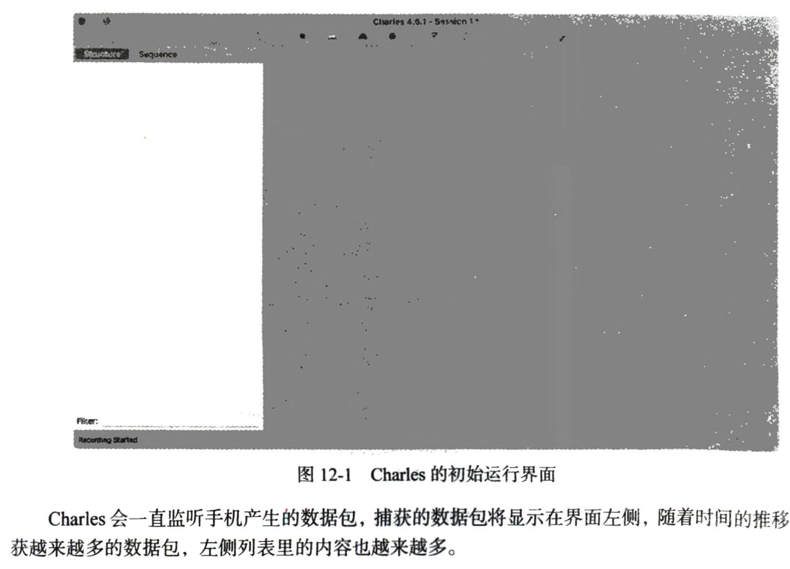
Charles 会一直监听手机产生的数据包,捕获的数据包将显示在界面左侧,随着时间的推移,会捕获越来越多的数据包,左侧列表里的内容也越来越多。
现在打开手机上下载的app1,其界面如图12-2所示。会发现 Charles 已经捕获了对应的数据包,其界面类似图12-3(注意一定要提前设置好 Charles 代理以及 Charles CA证书,否则没有效果)。
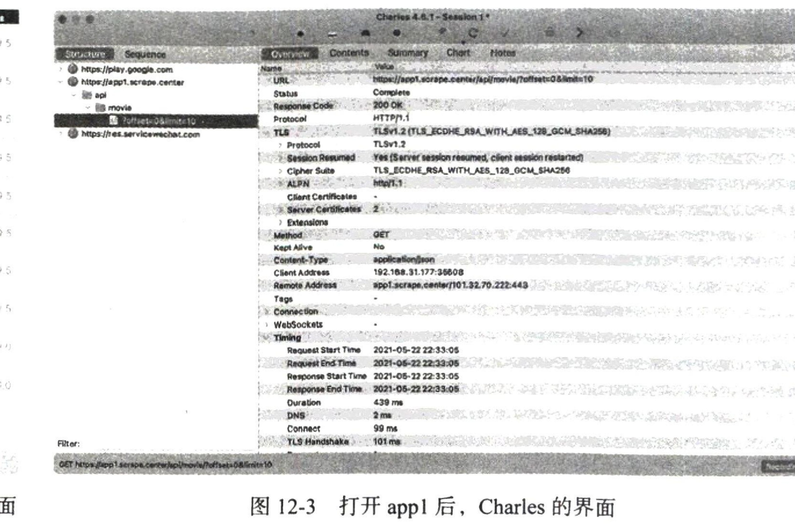
在app1里不断上拉,Charles 会捕获这个过程中产生的所有网络请求,图12-4中左侧的列表展示了捕获的数据包。
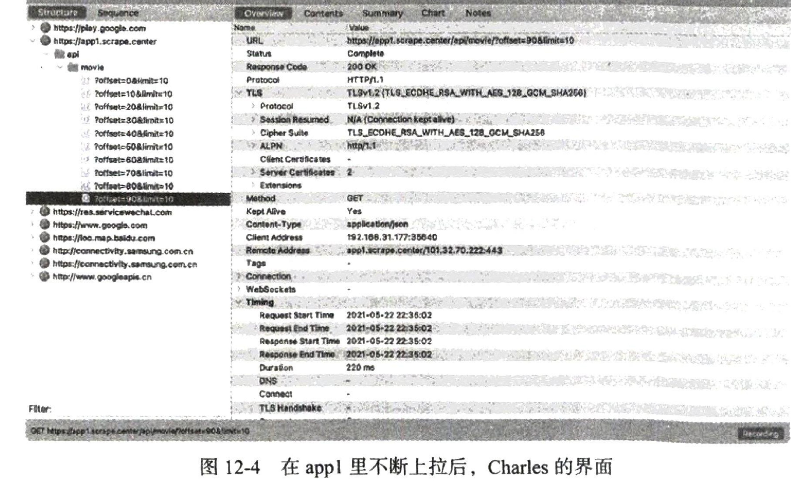
可以看到,左侧列表中有一个链接是https://app1.scrape.center,在app1里上拉的时候它会一直闪动,这就表示当前app1发出的获取电影数据的请求被 Charles 捕获了。为了验证这个结论的正确性,点击上述链接下的一个条目,切换到 Contents 选项卡,查看其详情。此时界面右侧会显示一些 JSON数据,其中有一个 results 字段,该字段中每一个条目里的 name 值都
是一个电影的名称,这些名称与图12-2中的电影一一对应,如图12-5所示。
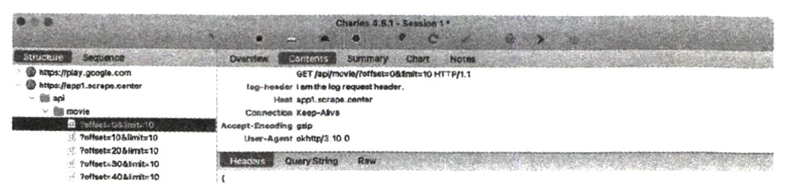
至此可以确定,https://app1.scrape.center 对应的接口就是获取电影数据的接口。这样我们就成功捕获了在上拉刷新过程中产生的请求内容和响应内容。
5. 分析
现在分析一下捕获的请求内容和响应内容的详细信息。首先回到Overview 选项卡,界面右侧的上方显示了请求 URL、响应状态码 Response Code 和请求方法 Method 等信息,如图12-6所示,这些内容和在网页中用浏览器开发者工具捕获的内容是类似的。
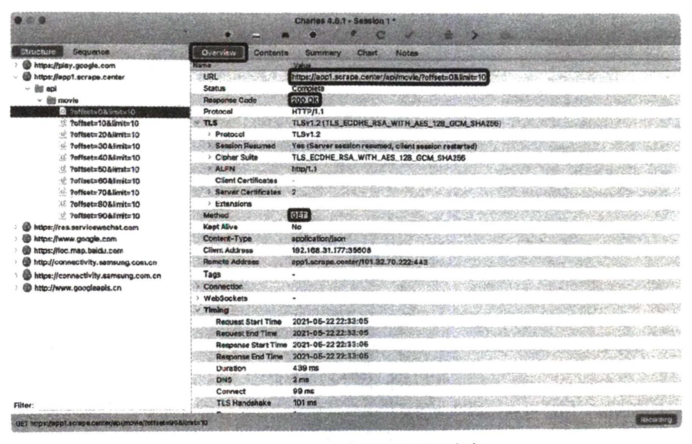
接下来点击 Contents 选项卡,查看请求内容和响应内容的详情,界面如图 12-7所示。上半部分显示的是请求的信息,下半部分显示的是响应的信息。切换到 Headers 选项卡即可看到请求头,切换到 JSON Text 选项卡即可看到响应体,并且响应体的内容已经被格式化。
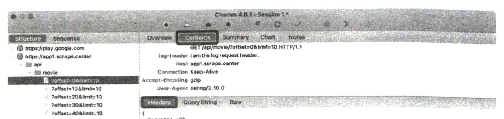
由于这个请求是 GET请求,因此还需要关心GET的参数信息,切换到 Query String 选项卡即可查看,如图12-8所示。
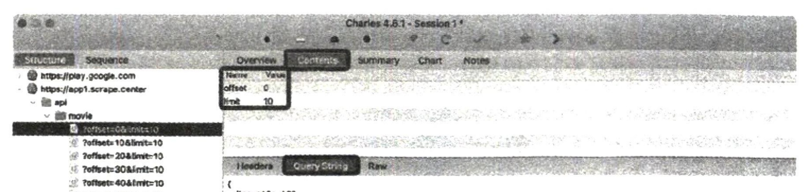
对于其他 App,同样可以使用本节的分析方式。如果能直接分析出请求 URL 和参数的规律,就可以直接模拟发出请求实现数据的批量抓取。
6. 重发
Charles 还有一个强大功能，是可以对捕获的请求内容加以修改并把修改后的请求发送出去。点击界面右侧上方的修改按钮，左侧列表就会出现一个以编辑图标为开头的接口，代表我们正在修改此接口对应的请求，如图12-9所示。
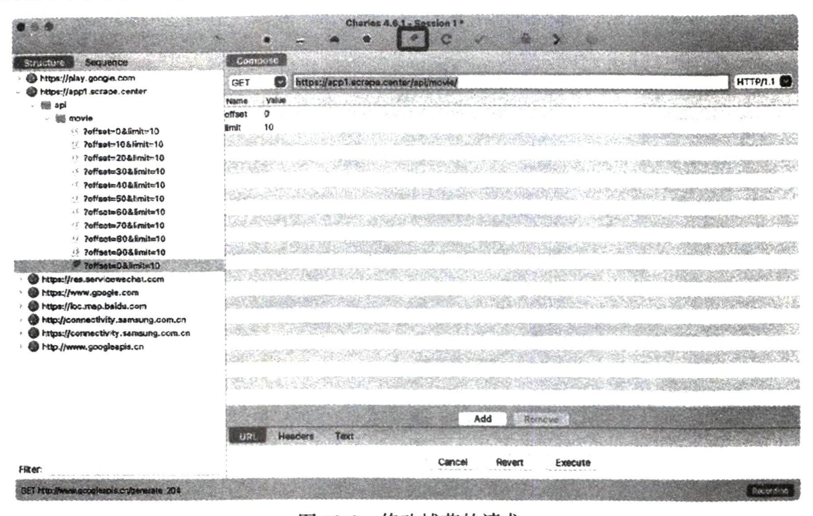
可以修改请求参数中的某个字段，例如这里将 offset 字段的值由0修改为10，如图12-10所示，然后点击界面下方的Execute 按钮即可发送修改后的请求。
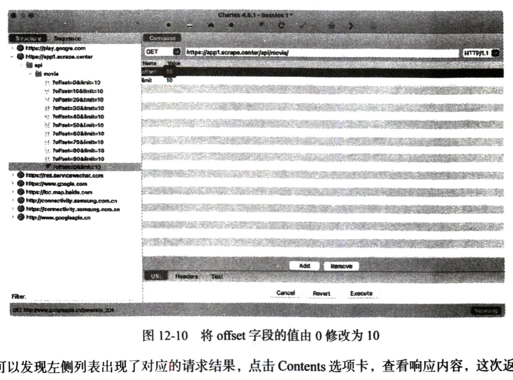
可以发现左侧列表出现了对应的请求结果，点击 Contents 选项卡，查看响应内容，这次返回的是第2个列表页中的电影信息，如图12-11 所示。
有了重发功能，就可以方便地使用 Charles 做调试了，可以通过修改参数、接口等测试不同请求的响应状态，从而知道哪些参数必要和哪些不必要，以及参数分别有什么规律，最后抽象出一个最简单的接口供模拟使用。
7. 修改响应内容
除了修改请求内容，Charles 还可以修改响应内容，例如将响应内容修改为本地或远程的某个文件，这样就可以实现数据的修改和伪造了。怎么实现呢？右击任意一个请求，可以看到出现的菜单中有 Map Remote 和 Map Local 这两个选项，通过这两个选项就可以将响应内容修改为远程或本地的文件，
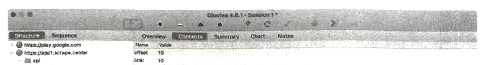
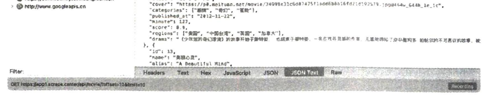
以生成本地文件为例，怎么实现呢？可以先把当前的响应内容，也就是 JSON Text 的内容复制下来，保存成本地文件，文件名是 data.json，
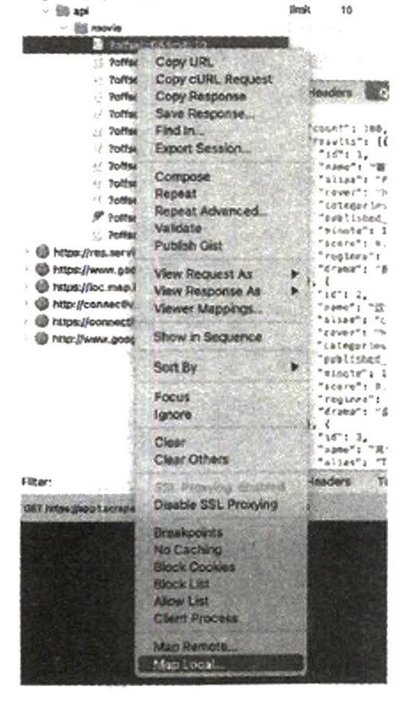
Charles 抓包工具的使用然后修改其中的字段值,例如将第一个条目的 name 值修改为“霸王别姬 2”,并保存修改,如图 12-14所示。
data.json
{
"count": 100,
"id": 1,
"results": [{
"name":"霸王别姬2",
"alias": "Farewell My Concubine",
"cover": "https://p0.meituan.net/movie/
ce4da3e03e655b5b88ed31b5cd7896cf62472.jpg@464w_644h_1e_1c",
"categories":["剧情","爱情"],
"published_at": "1993-07-26",
"minute": 171,
"score": 9.5,
"regions": ["中国内地","中国香港"]
}, {
"id": 2,
"name":"这个杀手不太冷",
"alias": "Léon",
"cover": "https://p1.meituan.net/movie/
6bea9af4524dfbd0b668eaa7e187c3df767253.jpg@464w_644h_le_1c",
"categories":["剧情","动作","犯罪"],
"published_at": "1994-09-14",
"minute": 110,
"score": 9.5,
"regions": ["法国"]
}, {
"id": 3,
"name":"肖申克的救赎”,
"alias": "The Shawshank Redemption",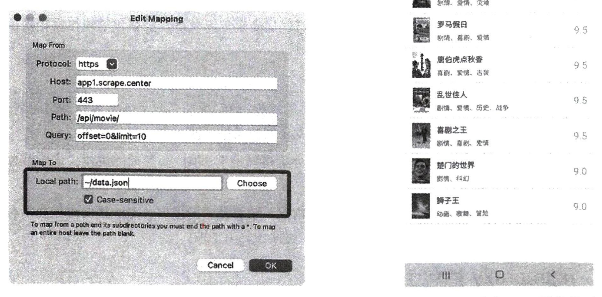
再在 Map Local 的配置中,选定data.json文件的保存路径,如图12-15所示。这样,我们就把 app1的第一个请求——加载列表页成功修改成本地文件 data.json中的内容了。接下来重新启动app1,界面如图12-16所示。
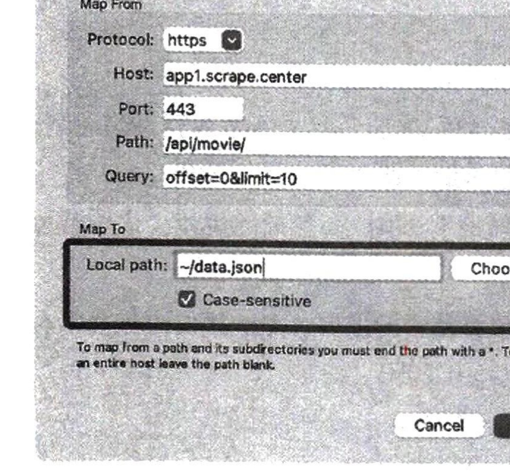
可以发现,第一个电影的名称变成了“霸王别姬2”,我们成功修改了响应内容。这和11.11 节内容的原理其实都是修改了HTTP响应的内容。在11.11节中,我们使用 Playwright修改了网页中要加载的一些数据文件,将它们映射为本地的文件,整个过程是依据 Playwright 中设置的规则完成的,此处是借助Charles 完成。
可以把前面所讲的“重发”和这个过程称为中间人攻击,Charles 就相当于中间人,它可以拦截请求内容和响应内容,并对这些内容进行修改,而手机端完全无感。
8. 模拟爬取
现在我们已经成功完成了抓包操作,app1发出的所有请求一目了然,请求 URL 就是 https://app1.scrape.center/api/movie/,后面跟着两个请求参数 offset 和limit。显然,offset 就是偏移量,limit 就是一次的返回结果中包含的条目数量。例如 offset为20,limit为10,代表返回第21~30条电影的信息。另外,通过观察可以发现一共有100个电影,因此 offset 取0、10、20、...、90, limit 则恒为10。接下来我们用 Python 简单模拟一下请求,这里写法有一些从简,代码如下:
import requests
BASE_URL = 'https://app1.scrape.center/api/movie?offset={offset}&limit=10'
for i in range(0, 10):
offset = i * 10
url= BASE_URL.format(offset=offset)
data = requests.get(url).json()
print('data', data)运行结果如下:
data {'count': 100, 'results': [{'id': 1, 'name':'霸王别姬', 'alias': 'Farewell My Concubine', 'cover':'https://po.meituan.net/movie/ce4da3e03e655b5b88ed31b5cd7896cf62472.jpg@464w_644h_1e_1c', 'categories': ['剧情','爱情'], 'published_at': '1993-07-26', 'minute': 171, 'score': 9.5, 'regions': ['中国大陆','中国香港']},{'id': 2, 'name':'这个杀手不太冷','alias': 'Léon', 'cover': ... 'published_at': '1995-07-15', 'minute':89, 'score': 9.0, 'regions': ['美国']}]}
data {'count': 100, 'results': [{'id': 11, 'name': 'V字仇杀队', 'alias': 'V for Vendetta', 'cover':'https://p1.meituan.net/movie/06ec3c1c647942b1e40bca84036014e9490863.jpg@464w_644h_1e_1c', 'categories':
['剧情','动作','科幻','惊悚'], 'published_at': '2005-12-11', 'minute': 132, 'score': 8.9, 'regions': ['美国','英国','德国']},... 'categories': ['纪录片'],'published_at': '2001-12-12', 'minute': 98, 'score':9.1, 'regions': ['法国','德国','意大利','西班牙','瑞士']}]}
data {'count': 100, 'results': [{'id': 21, 'name':'黃金三镖客', 'alias': 'Il buono, il brutto, il cattivo.',
'cover':可以看到,我们轻松模拟了每个请求,并爬取了服务器的响应内容。由于 app1 的接口没有任何加密措施,因此我们仅仅靠抓包以及观察数据包的规律就轻松模拟了app1 的请求。
9. 总结
本节介绍了借助抓包工具 Charles 模拟 App请求的过程。我们成功抓取了App 发往网络的数据包,还捕获了原始的响应数据,并通过修改原始请求和发送修改后的请求进行了接口测试。另外,知道了请求和响应的具体内容后,通过分析得到请求 URL 和参数的规律,之后就可以用程序模拟请求实现批量抓取。当然,本节所讲的案例是基于一种比较理想的情况,随着技术的发展,App接口往往会带有密钥或者出现无法抓包的情况,在第13章会详细讲解如何处理此类情形。
12.2 mitmproxy 抓包工具的使用
mitmproxy 是一个支持 HTTP/HTTPS 协议的抓包程序,和Fiddler、Charles 有类似的功能,只不过它以控制台的形式操作。mitmproxy 还有两个关联组件。一个是mitmdump,这是mitmproxy 的命令行接口,利用它我们可以对接 Python 脚本,用Python实现监听后的处理。另一个是mitmweb,这是一个Web程序,通过它我们可以清楚地观察到 mitmproxy 捕获的请求。
本节来了解一下mitmproxy的用法。
1. mitmproxy 的功能
mitmproxy 有如下几项功能:拦截 HTTP/HTTPS的请求和响应;
保存并分析 HTTP 会话;
模拟客户端发起请求,模拟服务端返回响应;
利用反向代理将流量转发给指定服务器;
支持Mac 系统和Linux 系统上的透明代理;
利用Python 实时处理 HTTP请求和响应。整体来看,mitmproxy 相当于一个命令行版本的Charles,同样可以捕获与修改请求内容和响应内容。其实,相比 Charles, mitmproxy 最有优势的是它的关联组件 mitmdump, mitmdump可以使用Python脚本实时处理请求和响应,功能非常强大。本节我们先了解 mitmproxy 的基本功能,12.3节再来介绍 mitmdump 对接 Python 的实现。
2. 准备工作
和 Charles一样,mitmproxy 运行之后会默认在当前电脑的8080端口开启一个代理服务,这个服务实际上是一个HTTP/HTTPS的代理。请确保已经正确安装好了 mitmproxy,并且让手机和mitmproxy 所在的电脑处于同一个局域网下。然后配置好 mitmproxy CA,具体的安装和配置方法见 https://setup.scrape.center/mitmproxy。
3. 抓包原理
让手机和电脑处在同一个局域网下,将手机代理设置为mitmproxy的代理服务的地址。这样手机在访问互联网的时候,数据包就会先流经 mitmproxy,再由 mitmproxy 把这些数据包转发给真正的服务器;同样,服务器返回的数据包也会先到达 mitmproxy,再由 mitmproxy 转发给手机。整个过程中的 mitmproxy 相当于中间人,能够抓取所有请求和响应。这个过程还可以对接 mitmdump,直接用Python 脚本处理抓取的请求和响应的具体内容。例如得到响应之后,直接解析其内容,然后存入数据库。
4. 基本使用
首先需要运行 mitmproxy,命令如下:mitmproxy运行之后当前电脑的8080端口上会运行一个代理服务。mitmproxy的页面如图 12-17所示,右下角是当前正在监听的端口。
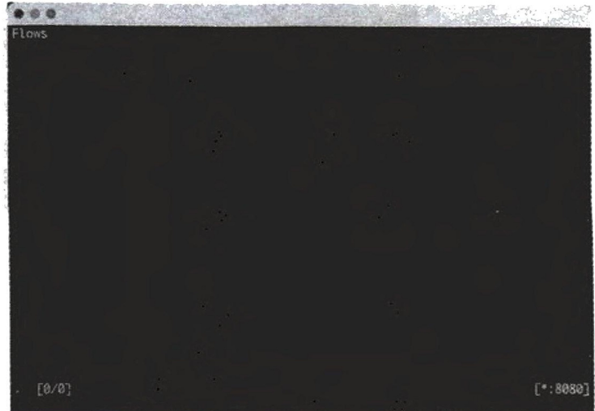
接下来将手机和电脑连接在同一局域网下,将代理设置为当前代理。先查看当前电脑的IP地址,在Windows 上查看的命令如下:ipconfig在Linux和Mac上查看的命令如下:
ifconfig输出结果如图12-18所示。
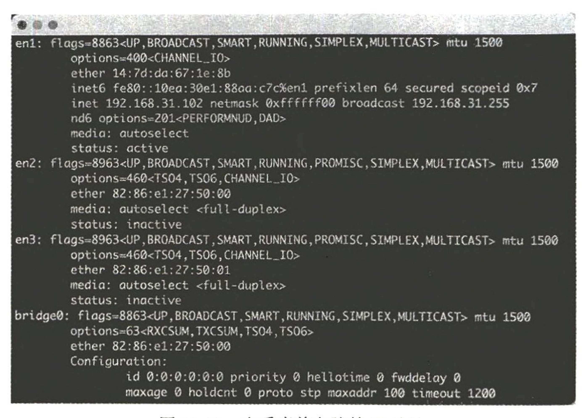
当前电脑的IP地址形式一般是10.***、172.16.*.*和192.168.*.*,例如图12-18中的192.168.31.102。设置 mitmproxy 的代理时,设置为此地址即可。设置成功后,在手机浏览器上访问任意网页或者打开任意App时,mitmproxy 页面上都会呈现出这个过程中的所有请求,例如在手机浏览器上打开百度,期间产生的请求如图12-19所示。
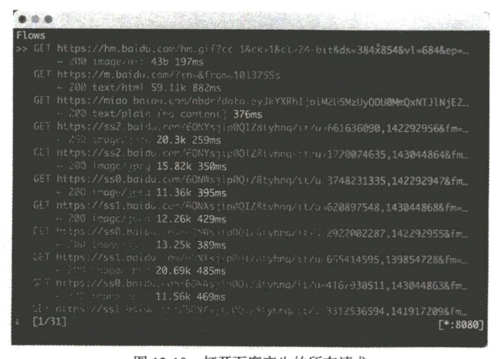
这也相当于我们之前在浏览器开发者工具中监听得到的内容。图12-19中左下角显示的1/31代表一共产生了31个请求,箭头当前所指的请求是第1个。每个请求的开头都有一个GET或POST,这是请求方法,后面紧接的内容是请求URL,URL 之后是请求对应的响应状态码,其后是响应内容的类型(例如text/html代表网页文档、image/jpeg代表图片),再后面是响应体的大小和响应时间。总之,当前页面呈现了所有请求和响应的概览,我们可以通过这个页面观察所有的请求。
如果想查看某个请求的详情,可以通过上下键切换,选中这个请求后按下回车键,进入请求的详情页面,如图12-20所示。
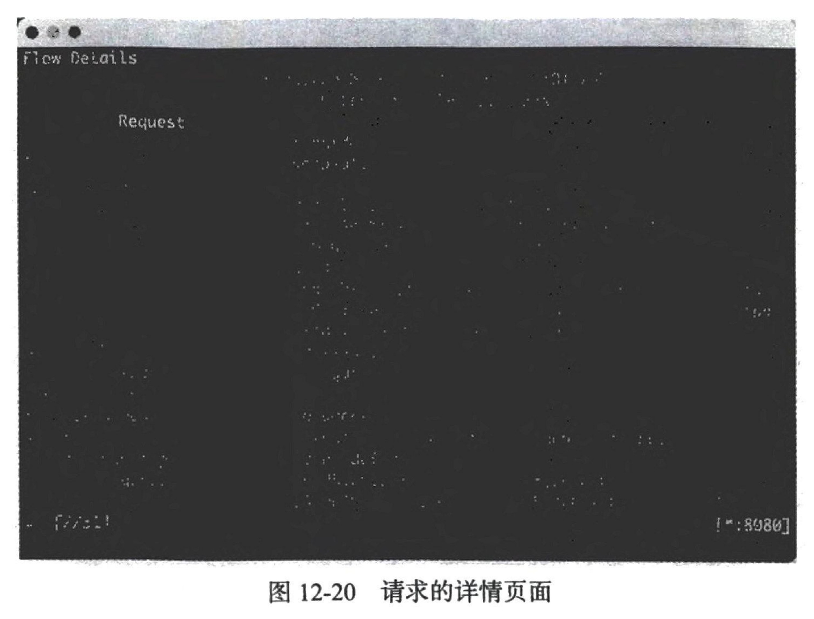
从图12-20中,可以看到请求头的详细信息,例如Host、Cookie等。图的上方有 Request、Response和 Detail 三个选项,当前是打开了 Request 选项。按下Tab键切换至 Response 选项卡,查看请求对应的响应详情,如图12-21所示。
开始的内容是响应头的信息,下拉之后可以看到响应体的信息。针对当前请求,响应体就是网页的源代码。此时再按Tab键,切换到最后一个选项卡 Detail,即可看到当前请求的详细信息,如服务器的IP 和端口、HTTP协议版本、客户端的IP和端口等,如图12-22 所示。mitmproxy 还提供了命令行式的编辑功能,使我们可以重新编辑请求。按下E键即可进入编辑页面,这时它会询问要编辑哪部分内容,选项有 cookies、query、url等,如图12-23所示。
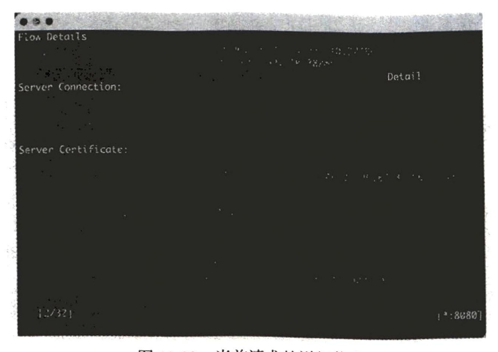
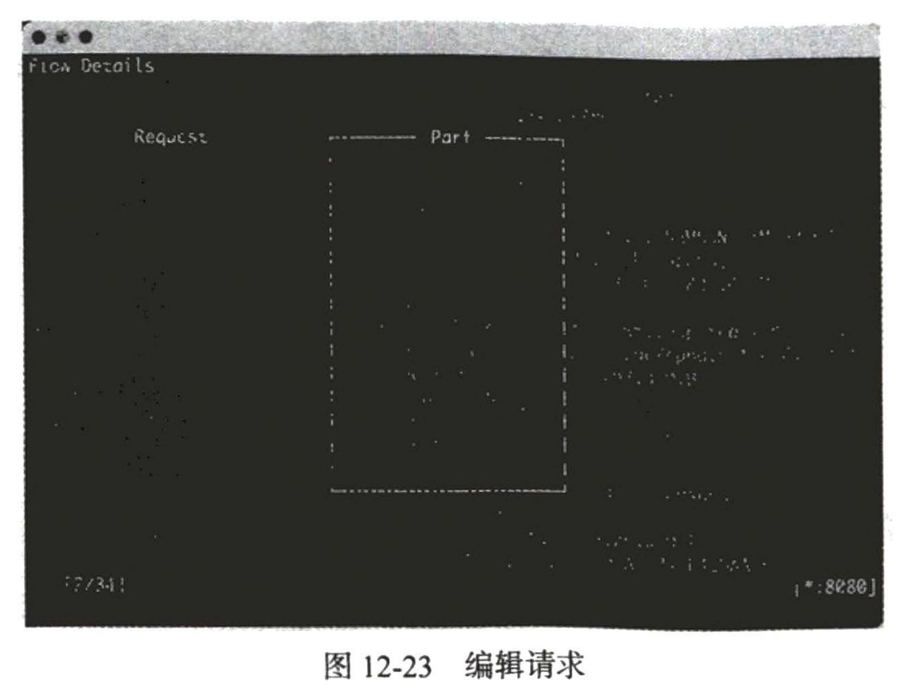
按下要编辑内容对应的索引键即可进入编辑页面,例如按下数字6键,进入编辑请求 URL 的参数 Query Strings 的页面,如图12-24所示。我们可以按下D键删除当前的Query Strings,然后按下A键新增一行,输入新的Key 和Value。
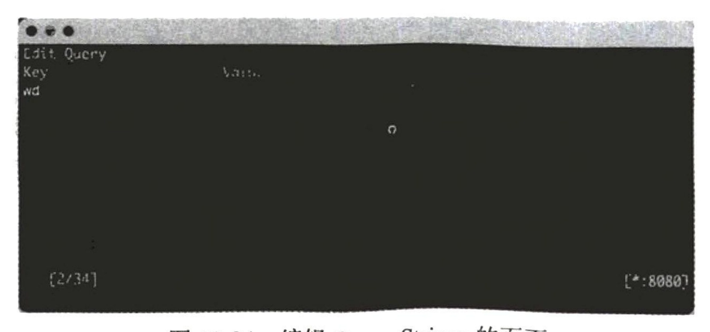
这里我们分别输入wd和NBA。之后按下Esc键和Q键返回请求的详情页面,可以看到请求 URL里多了一个 wd=NBA的参数,如图12-25所示。
接着按下E键和数字4键,进入编辑 Path 的页面,如图12-26所示。和上面流程一样,按下D键和A键修改 Path的内容。这里我们将 Path 修改为s。之后按下Esc键和Q键返回请求的详情页面,可以看到请求 URL 变成了https://m.baidu.com/s?wd=NBA,访问这个页面,结果如图12-27所示,这和用百度搜索关键词 NBA的返回结果一样。
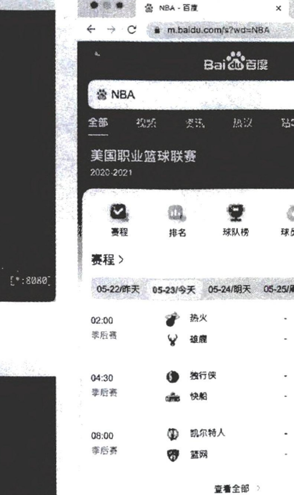
接下来,按下R键重新发送修改后的请求,可以看到请求旁边多了一个回旋箭头,如图12-28所示。
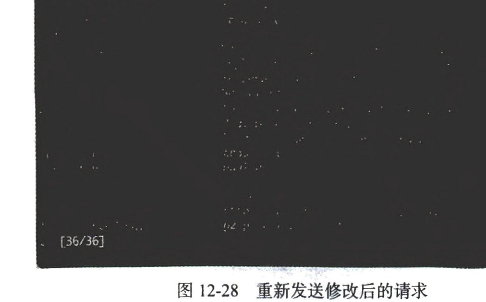
响应结果如图 12-29所示,观察响应体,可以看到图 12-27 所示页面的源代码。
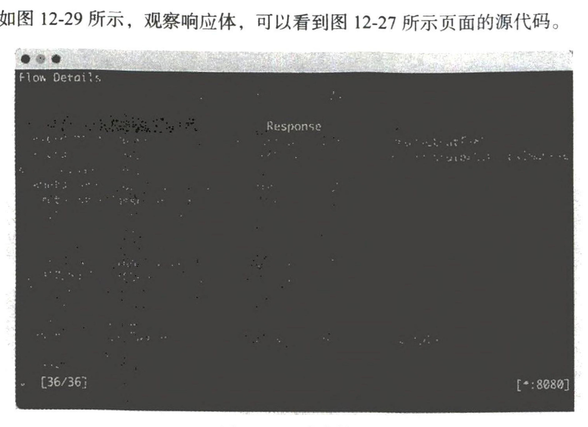
5. 总结
本节介绍了 mitmproxy的简单用法,其基本功能和Charles 是类似的,只是不像Charles 那样有方便操作的UI界面,不过快捷键使用熟练后,也是非常方便的。利用 mitmproxy,我们可以观察手机上的所有请求,以及对请求的修改并重新发送。Fiddler、Charles 也有这个功能,而且它们的UI界面操作起来更加方便。那么 mitmproxy 的优势何在?其实,mitmproxy 的强大之处体现在它的关联组件 mitmdump上,有了 mitmdump,我们便可以直接对接Python 脚本对请求和响应做处理。12.3节我们就来学习 mitmdump 的用法。
12.3 mitmdump 实时抓包处理
mitmdump 是 mitmproxy 的命令行接口,可以对接Python 脚本处理请求和响应,这是相比 Fiddler、Charles 等工具更加方便的地方。有了它,我们不用再手动抓取和分析HTTP请求与响应,只要写好请求和响应的处理逻辑即可。正是由于 mitmdump可以对接 Python 脚本,因此我们在Python 脚本中获得请求和响应的内容时,就可以顺便添加一些解析、存储数据的逻辑,这样就实现了数据的抓取和实时处理。
1. 实例引入
我们可以使用命令启动 mitmdump:mitmdump -s script.py这里使用-s参数指定了本地脚本 script.py 为处理脚本,用来处理抓取的数据,需要将其放置在当前命令的执行目录下。我们可以在 script.py 脚本里写入如下内容:
def request(flow):
flow.request.headers['User-Agent'] = 'MitmProxy'
print(flow.request.headers)其中定义了一个 request 方法,参数为flow,这是一个HTTPFlow 对象,调用其 request 属性即可
获取当前的请求对象。这里将当前请求对象的请求头 User-Agent修改成了 MitmProxy,然后打印出了所有请求头。运行启动命令后,在手机端访问http://www.httpbin.org/get,可以看到手机端显示的页面显示如图12-30所示。
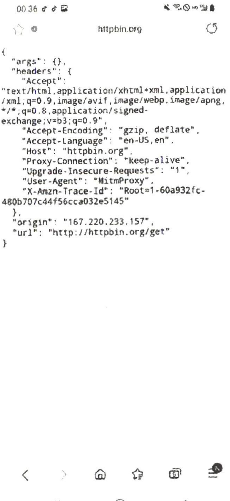
同时电脑端的控制台输出如图12-31所示的结果。
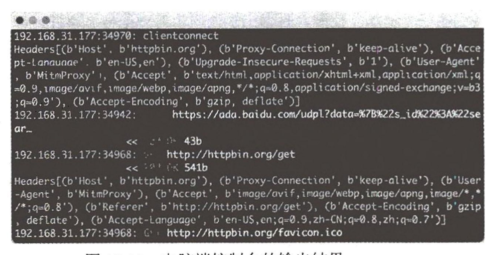
图12-30 中的headers 实际上就是请求头,可以看到里面的User-Agent 是我们修改后的MitmProxy。图12-31中的Headers 也是,其中 User-Agent 的内容正是 MitmProxy。在这个案例中,我们通过只有3行代码的script.py 脚本完成了对请求的修改,输出结果可以呈现在电脑端的控制台上,调试起来很方便。
2. 日志输出
mitmdump 提供了专门的日志输出功能,可以设定以不同的颜色输出不同级别的结果。把script.py脚本的内容修改成如下这样:
from mitmproxy import ctx
def request(flow):
flow.request.headers['User-Agent'] = 'MitmProxy'
ctx.log.info(str(flow.request.headers))
ctx.log.warn(str(flow.request.headers))
ctx.log.error(str(flow.request.headers))这里调用了 ctx模块,它有一个名为log 的功能,调用不同的输出方法可以输出不同颜色的结果,以便我们更直观、方便地调试(例如,调用 info 方法输出的结果为白色,调用 warn 方法输出的结果为黄色,调用error 方法输出的内容为红色)。上述代码的运行结果如图12-32所示。
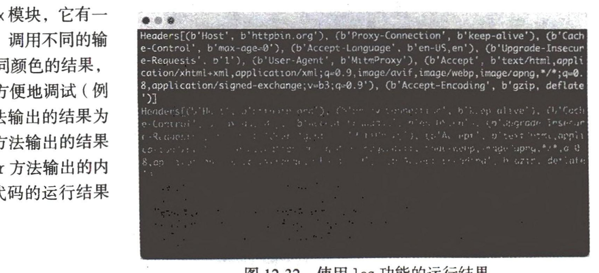
3. 请求
我们来看看 mitmdump 还有哪些常用的功能,先用一个实例感受一下:
from mitmproxy import ctxdef request(flow):
request = flow.request
info = ctx.log.info
info(request.url)
info(str(request.headers))
info(str(request.cookies))
info(request.host)
info(request.method)
info(str(request.port))
info(request.scheme)这里的 request 方法是 mitmdump 针对请求提供的处理接口。将 script.py 脚本修改为如上内容,然后在手机上打开 http://www.httpbin.org/get,即可看到电脑端的控制台输出了一系列请求。这里我们找到第一个请求,控制台打印出了该请求的一些常见属性,如请求 URL、请求头、请求 Cookies、请求 Host、请求方法、请求端口、请求协议等,结果如图12-33所示。我们可以修改其中的任意属性,就像最初修改请求头 User-Agent一样,直接赋值即可。例如,修改请求 URL:
def request(flow):
url = 'https://www.baidu.com'flow.request.url = url这里直接将请求 URL 修改成了百度,会发生什么事情呢?手机端会显示如图12-34所示的页面。
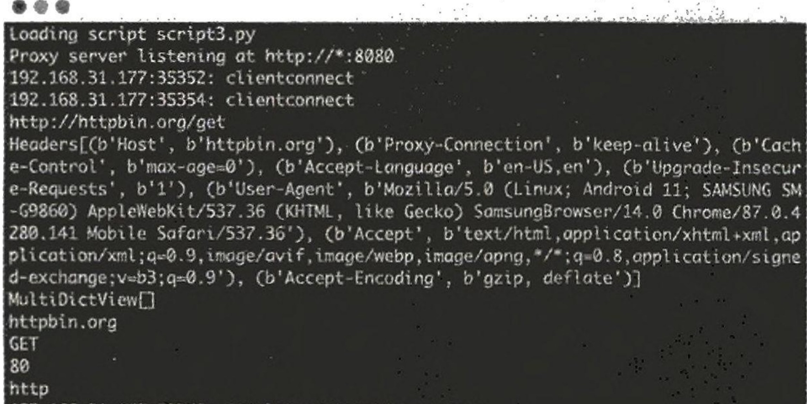
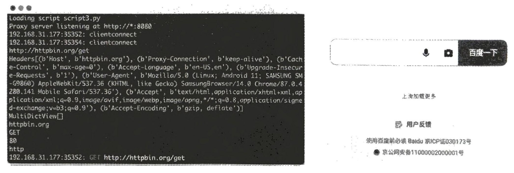
有意思的是,浏览器最上方呈现的网址还是 http://www.httpbin.org,而页面已经变成了百度首页。我们用简单的脚本就成功修改了目标网站,意味着这种方式使修改和伪造请求变得轻而易举,这也是中间人攻击。注意 通过这个实例我们也能知道,URL 正确不代表页面内容也正确。我们需要进一步提高安全防范意识。
了解了基本用法,很容易就能获取和修改请求内容,另外可以通过修改Cookie、添加代理等方式规避反爬。
4. 响应
对于爬虫来说,更加关心的其实是响应内容,响应体才是要爬取的结果。和请求一样,mitmdump针对响应也提供了对应的处理接口,就是 response 方法:
from mitmproxy import ctxdef response(flow):
response = flow.response
info = ctx.log.info
info(str(response.status_code))
info(str(response.headers))
info(str(response.cookies))
info(str(response.text))将 script.py 脚本修改为如上内容,然后用手机访问http://www.httpbin.org/get,电脑端控制台会输出响应状态码、响应头、响应 Cookie 和响应体几个属性,其中最后一个就是网页的源代码。电脑端控制台的输出结果如图12-35所示。
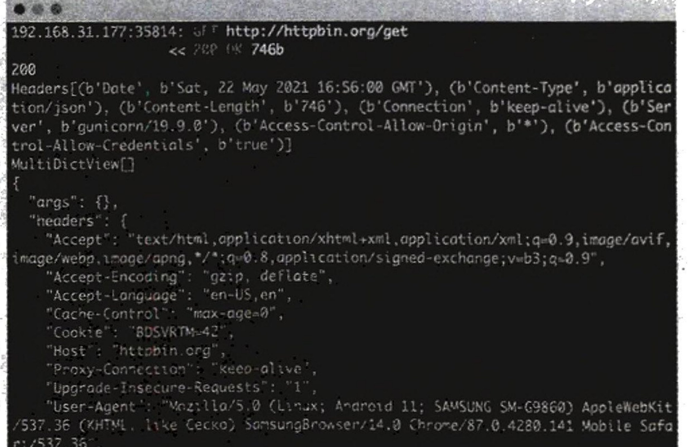
我们通过 response 方法获取了每个请求对应的响应内容,接下来对响应信息进行提取和存储,就成功完成爬取了。
5. 实战准备
我们已经可以利用 mitmdump 对接 Python 脚本实时处理响应内容了,接下来看看能否将其应用于App 爬虫。先尝试将一个电影App 的接口数据爬取下来,再将结果实时保存到 MongoDB 数据库中。请确保已经正确安装好 mitmproxy 和 mitmdump,手机和电脑处于同一个局域网下,以及配置好了 mitmproxy 的CA证书,具体的配置流程可以参考 https://setup.scrape.center/mitmproxy。本节使用的示例 App的下载地址为https://app5.scrape.center/,请在手机上安装这个App。
6. 抓取分析
首先获取一下当前页面的URL 和返回内容,编写一个脚本:
def response(flow):
print(flow.request.url)
print(flow.response.text)这里只打印了请求 URL 和响应体这两个最关键的部分,将此脚本保存 spider.py文件。接下来启动 mitmdump:
mitmdumps spider.py打开手机上下载的app5,便可以看到电脑端控制台输出了相应内容,接着不断下拉,可以看到手机屏幕上的电影数据在一页一页加载,如图12-36所示。观察一下电脑端控制台,可以看到输出了类似JSON数据的结果,部分结果如图12-37所示。
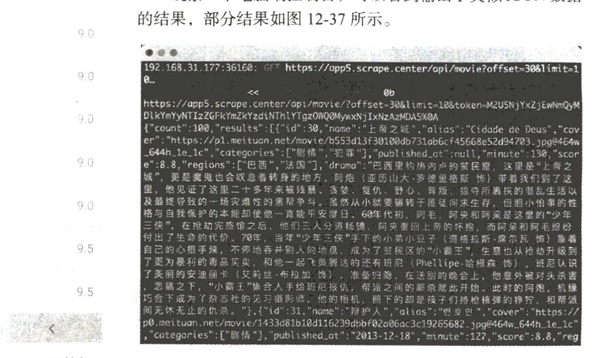
选取其中的一个URL 观察一下,具体为 https://app5.scrape.center/api/movie/?offset=30&limit=10&token=M2U5NjYxZjEwNmQyMDlkYmYyNTIzZGFkYmZkYzdiNThlYTgzOWQ0MywxNjIxNzAzM DA5%0A,可以看到除了offset、limit参数,里面还带有一个token。我们把结果中的响应体复制下来,并格式化处理,结果如图12-38所示。
{
data.json
"count": 100,
"results": [
{
"id": 30,
"name":"上帝之城",
"alias": "Cidade de Deus",
"cover": "https://p1.meituan.net/movie/
b553d13f30100db731ab6cf45668e52d94703.jpg@464w_644h_le_1c",
"categories":["剧情”,“犯罪”},
"published_at": null,
"minute": 130,
"score": 8.8,
"regions":["巴西”,“法国"],
"drama":"巴西里约热内卢的贫民窟,这里是“上帝之城”,更是魔鬼也会叹息着转身的地方。阿炮(亚历山大·罗德里格斯饰)
带着我们到了这里,他见证了这里二十多年来被残暴、贪婪、复仇、野心、背叛、掠夺所裹挟的混乱生活以及最终导致的一场灾难性的黑帮
争斗。虽然从小就要辗转于匪徒间求生存,但胆小怕事的性格与自我保护的本能却使他一直能平安度日。60年代初,阿毛、阿夹和阿呆是
这里的“少年
三侠”,在抢劫完旅馆之后,他们三人分道扬镳,阿夹重回上帝的怀抱,而阿呆和阿毛纷纷付出了生命的代价。78年,当年“少
年三侠”手下的小弟小豆子(道格拉斯·席尔瓦饰)靠着自己的心狠手辣,不停地吞并别人的地盘,成为了贫民区的“小霸王”,生意也从抢
劫升级到了更为暴利的毒品买卖,和他一起飞黄腾达的还有班尼(Phellipe·哈根森 饰)。班尼认识
了美丽的安迪丽卡(艾莉丝·布拉加饰),准备归隐,在送别的晚会上,他意外被对头杀害
,悲痛之下,“小霸王”集合人手给班尼报仇,帮派之间的厮杀就此开始。此时的阿炮,机缘
巧合下成为了杂志社的见习摄影师,他的相机,照下的却是孩子们持枪核弹的狰狞,和帮派
间无休无止的仇杀。”
},
{
"id": 31,
"name":"辩护人”,
"alias": "변호인",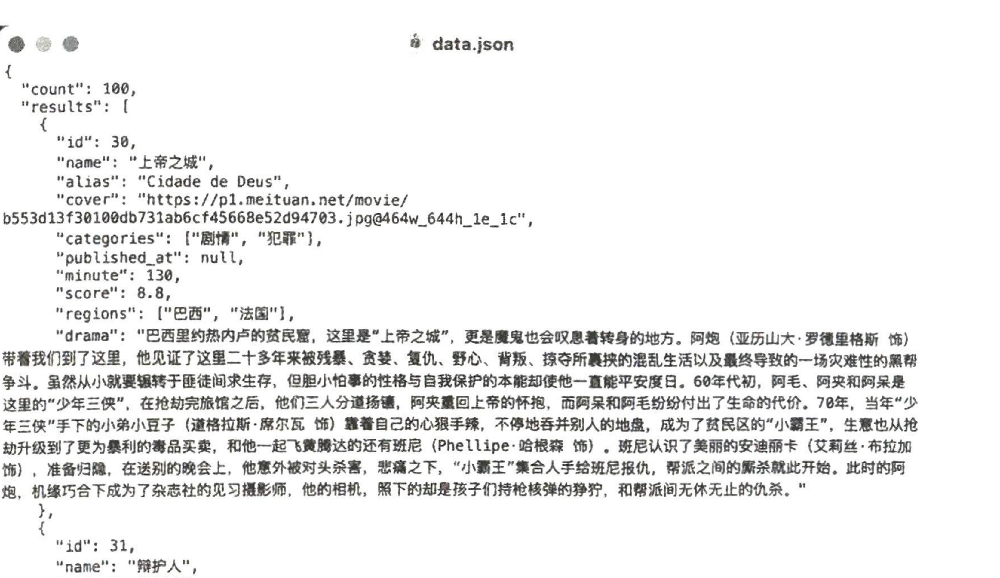
通过对比可以发现,图12-38中的内容和app5里显示的电影数据完全一致,说明我们成功截获了响应体。有人可能会想,为什么这里不能像12.1节那样直接用Python 请求爬取数据呢?因为这次App的接口带有一个加密参数 token,仅凭借抓包根本没法知道它是如何生成的,而通过Python 直接构造请求来爬取数据需要模拟 token 的生成逻辑,所以不能。好在我们已经可以直接通过 mitmdump抓取结果,相当于请求是App构造的,我们直接拿到了响应结果,得来全不费功夫,也不需要再去构造请求了,直接把响应结果保存下来就好。
7. 数据抓取
现在我们稍微完善一下 spider.py 脚本,增加一些过滤URL 和处理响应结果的逻辑:
import json
from mitmproxy import ctx
def response(flow):
url = 'https://app5.scrape.center/api/movie/'
if flow.request.url.startswith(url):
text
flow.response.text
if not text:
return
data = json.loads(text)
items = data.get('results')
for item in items:
ctx.log.info(str(item))之后重新打开 app5,并在电脑端控制台观察输出结果,如图12-39所示。
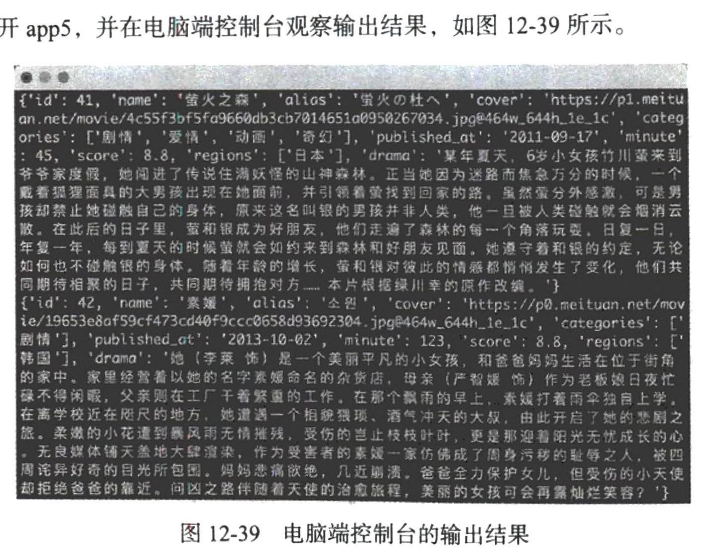
可以看到输出了每部电影的数据,数据以 JSON形式呈现。
8. 提取保存
现在再修改一下 spider.py脚本,将返回结果保存下来,保存为文本文件即可,改后的脚本内容如下:
import json
from mitmproxy import ctx
import osOUTPUT_FOLDER = 'movies'
os.path.exists(OUTPUT_FOLDER) or os.makedirs (OUTPUT_FOLDER)
def response(flow):
url = 'https://app5.scrape.center/api/movie/'
if flow.request.url.startswith(url):
text = flow.response.text
if not text:
return
data = json.loads(text)
items = data.get('results')
for item in items:
ctx.log.info(str(item))
with open(f'{OUTPUT_FOLDER}/{item["name"]}.json', 'w', encoding='utf-8') as f:
f.write(json.dumps(item, ensure_ascii=False, indent=2))然后重新打开 app5,滑一下屏幕,这时候观察 movies 文件夹,会发现成功生成了一些JSON文件,这些文件以电影名称命名,如图12-40所示。
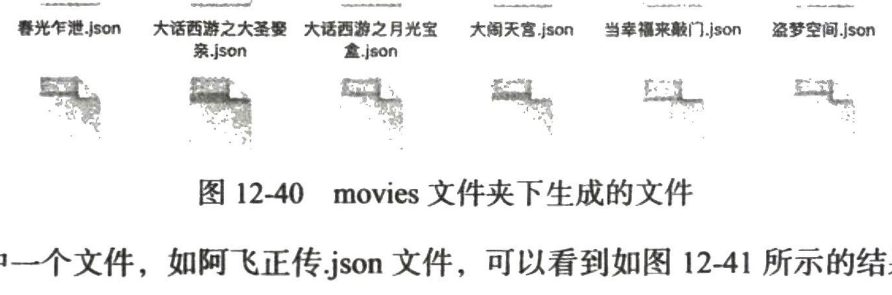
任意打开其中一个文件,如阿飞正传.json文件,可以看到如图 12-41 所示的结果。
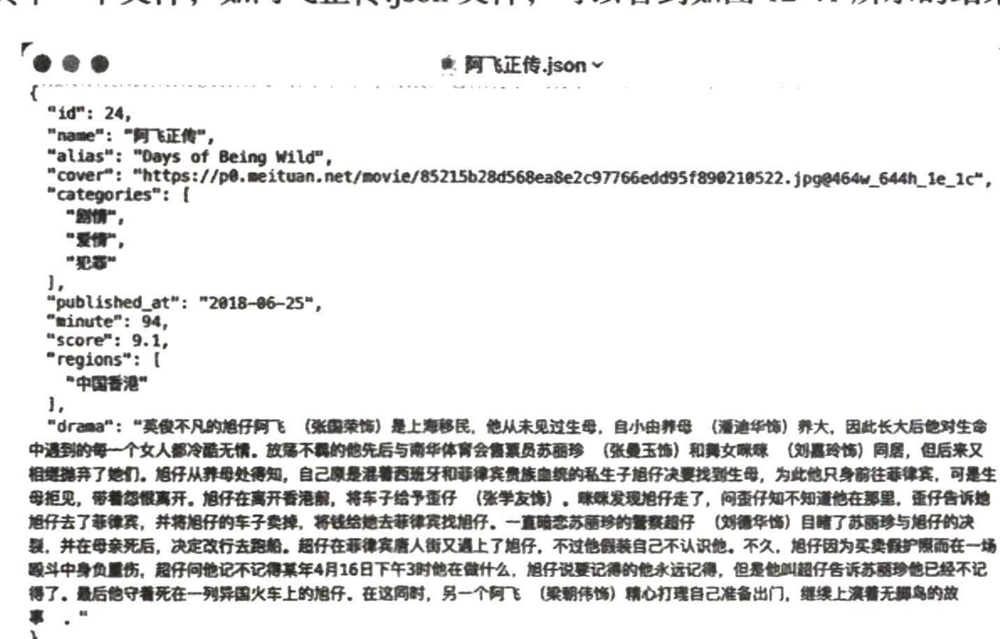
{
"id": 24,
"name":"阿飞正传",
"alias": "Days of Being Wild",
"cover": "https://p0.meituan.net/movie/85215b28d568ea8e2c97766edd95f890210522.jpg@464w_644h_le_1c",
"categories": [
"剧情",
"爱情",
"犯罪"
],
"published_at": "2018-06-25",
"minute": 94,
"score": 9.1,
"regions": [
"中国香港"
],
"drama":"英俊不凡的旭仔阿飞(张国荣饰)是上海移民,他从未见过生母,自小由养母 (潘迪华饰)养大,因此长大后他对生命中遇到的每一个女人都冷酷无情。放荡不羁的他先后与南华体育会售票员苏丽珍(张曼玉饰)和舞女咪咪(刘嘉玲饰)同居,但后来又相继抛弃了她们。旭仔从养母处得知,自己原是混着西班牙和菲律宾贵族血统的私生子旭仔决要找到生母,为此他只身前往菲律宾,可是生母拒见,带着怨恨离开。旭仔在离开香港前,将车子给予歪仔(张学友饰)。咪咪发现抱仔走了,问歪仔知不知道他在那里,歪仔告诉她旭仔去了菲律宾,并将旭仔的车子卖掉,将钱给她去菲律宾找旭仔。一直暗恋苏丽珍的警察超仔 (刘德华饰) 目睹了苏丽珍与旭仔的决裂,并在母亲死后,决定改行去跑船。超仔在菲律宾唐人街又遇上了旭仔,不过他假装自己不认识他。不久,旭仔因为买卖假护照而在一场殴斗中身负重伤,超仔问他记不记得某年4月16日下午3时他在做什么,旭仔说要记得的他永远记得,但是他叫超仔告诉苏丽珍他已经不记得了。最后他守着死在一列异国火车上的旭仔。在这同时,另一个阿飞(梁朝伟饰) 精心打理自己准备出门,继续上演着无脚鸟的故*."
}12.4 Appium 的使用
可以看到这部电影的数据已经实时保存下来了,其他电影也是如此。
9. 总结
本节主要讲解了 mitmdump的用法及脚本的编写方法,借助mitmdump,我们可以直接使用Python脚本实时处理拦截的请求和响应,由于可以实时获取响应内容,因此可以在此基础上进行一些实时处理,如提取和存储数据,这样就能轻而易举地把数据爬取下来了。本节代码见 https://github.com/Python3WebSpider/MitmProxyTest。
Appium 是一个跨平台的移动端自动化测试工具,可以非常便捷地为 iOS 和 Android 平台创建自动化测试用例。它可以模拟App的各种操作,如点击、滑动、文本输入等,我们手工能完成的操作Appium 也都能完成。我们在第7章曾了解过 Selenium,这是一个网页端的自动化测试工具,Appium 实际上就类似于它,也是利用WebDriver实现自动化测试。对于iOS设备,Appium使用 UIAutomation 实现驱动;对于Android设备,使用 UiAutomator 和 Selendroid 实现驱动。Appium 提供了一个服务器,我们可以向这个服务器发送一些操作指令,然后Appium会根据不同的指令驱动移动设备完成不同的动作。爬虫使用 Selenium 爬取 JavaScript 渲染的页面,实现所见即所爬。Appium 同样可以,所以在某些情况下,用Appium 做App 爬虫不失为一好的选择。本节我们就来了解Appium的基本使用方法,学习利用 Appium 进行自动化爬取的基本操作,主要目的是了解利用Appium 进行自动化测试的流程以及相关API 的用法。
1. 准备工作
请确保已经做好如下准备工作。
在电脑上安装好Appium 客户端,并且客户端可以正常运行。
在电脑上配置好 Android开发环境并能正常使用adb命令。
安装好 Python 版本的Appium API。以上 Appium 环境的具体配置方法可以参考https://setup.scrape.center/appium。除了配置好环境,还需要做到下面两步。
准备一部 Android 真机或启动一个 Android 模拟器,并在上面安装好示例App,下载地址为
https://app5.scrape.center/。用USB线连接电脑和 Android 真机或模拟器,确保 adb 能够正常连接到 Android 真机或模拟器。
2. Appium 启动APP
Appium 启动App的方式有两种:一种是用Appium 内置的驱动器打开App,另一种是利用 Python代码打开App。下面我们进行说明。两种方法都需要启动Appium服务,因此先打开Appium，如图12-42所示。
直接点击 Start Server v1.15.1 按钮即可启动Appium 服务,这就相当于开启了一个Appium 服务器。我们可以通过 Appium 内置的驱动器或 Python 代码向 Appium 服务发送一系列操作指令,它会根据不同的指令驱动移动设备完成不同的动作。Appium 启动后的运行界面如图12-43所示。
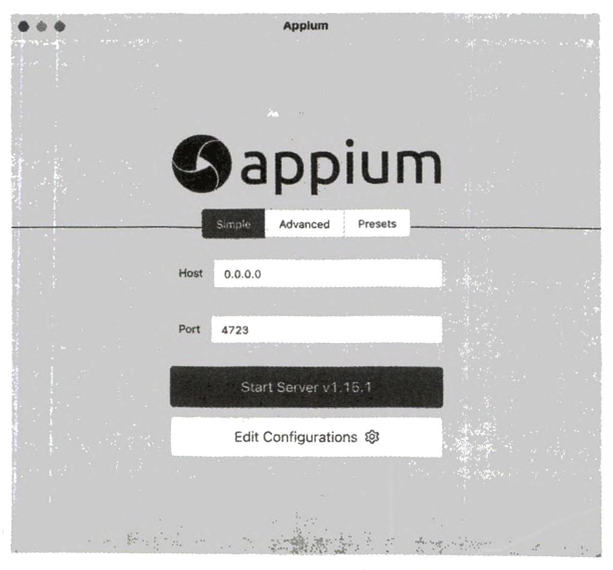
Appium 正在监听4723端口,我们向此端口对应的服务接口发送操作指令,运行界面就会显示这个过程的操作日志。可以输入adb命令测试和手机的连接情况,命令如下:adb devices -1如果输出结果类似下面这样,说明电脑已经正确连接手机:List of devices attached R5CN30RMOQL device usb:338690048X product:y2qzcx model:SM_G9860 device:y2q transport_id:1其中 model 是设备的名称,就是即将会介绍到的deviceName,对于不同的手机其结果不同,请以自己的结果为准。
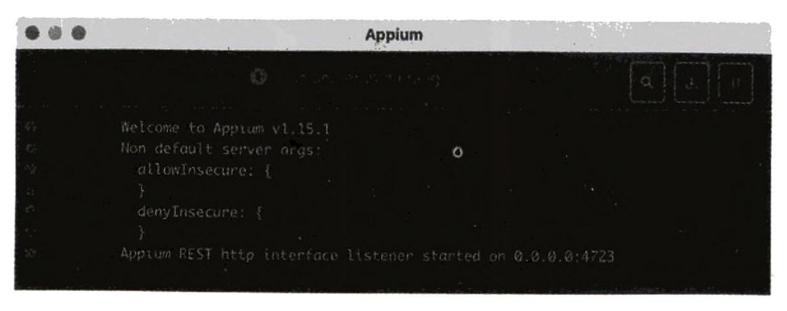
接下来用 Appium 内置的驱动器打开 App,点击运行界面右上方的 Start Inspector Session 按钮,如
图 12-44 所示。
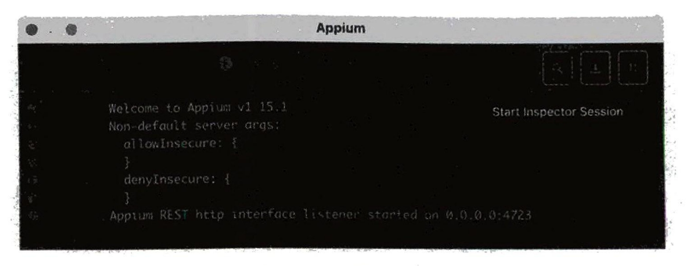
会打开一个配置页面,如图 12-45 所示。我们需要在这里配置启动 App 时的 Desired Capabilities 参数,包括 platformName、deviceName、appPackage 和 appActivity。
platformName: 平台名称,取值有 Android 和 iOS,此处填写 Android。deviceName: 设备名称,是手机的具体类型,即刚才获取的 model 值。appPackage: App 包名,示例 App 的包名为 com.goldze.mvvmhabit。appActivity: 入口 Activity 名,示例 App 的入口 Activity 名为 .ui.MainActivity。noReset: 不重置 App 的状态,此处需要填 true,如果不填,那么每次打开 App 都和新安装时一样。例如启动了微信,而此参数没有设置,就会变成未登录状态。
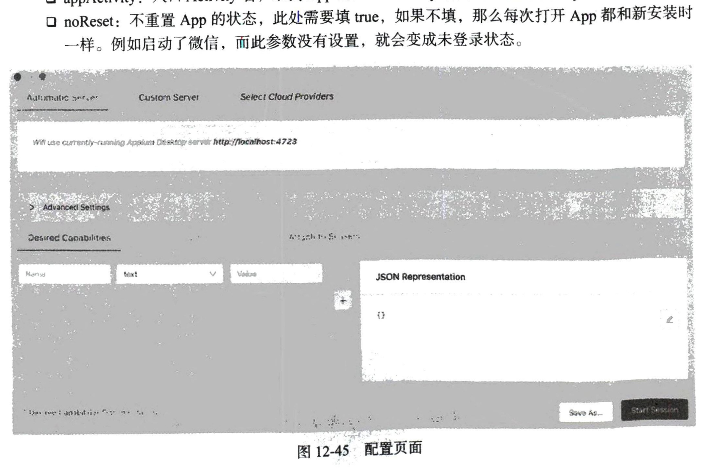
当前配置页面的左下角链接了包含更多配置参数相关说明的文档,大家可以参考盖文档配置更多的参数。不同 App 的 appPackage 和 appActivity是不一样的,如果不知道它们的值,可以用jadx(https://github.com/skylot/jadx)这样的工具解析 App安装包中的AndroidManifest.xml 文件获取。例如这里用jadx 工具打开示例App,就可以看到它的AndroidManifest.xml 文件,如图12-46所示。
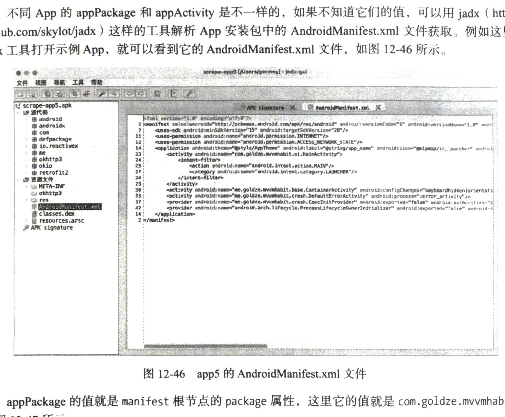
appPackage 的值就是 manifest 根节点的 package 属性,这里它的值就是com.goldze.mvvmhabit,如图12-47所示。
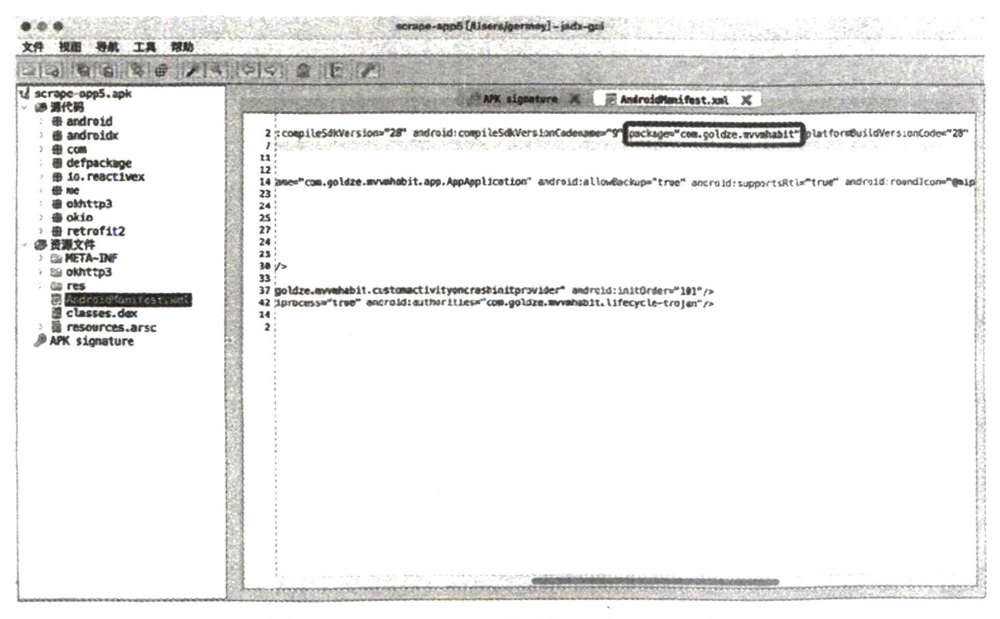
可以看到, AndroidManifest.xml 文件中有很多个 activity 节点,其中一个包含如下关键内容:
<intent-filter>
<action android:name="android.intent.action.MAIN" />
<category android:name="android.intent.category.LAUNCHER" />
</intent-filter>这4行内容代表 app5在启动时会启动该 activity 节点中声明的 Activity 对应的页面,找到该activity 节点中的android:name属性值,这里就是com.goldze.mvvmhabit.ui.MainActivity,如图 12-48所示。
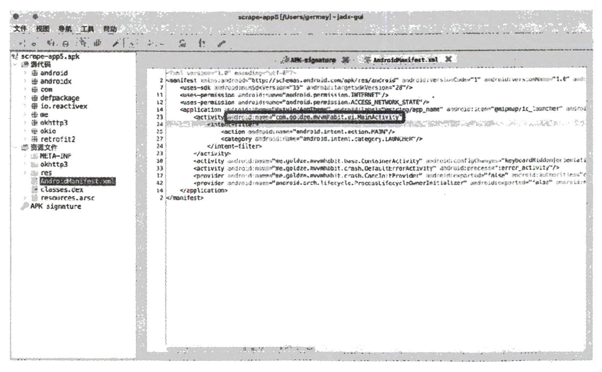
在Appium 配置的时候,需要去掉属性值里前面的appPackage信息,于是结果为.ui.MainActivity。接下来在Appium 中加入上面5个配置,如图12-49所示。
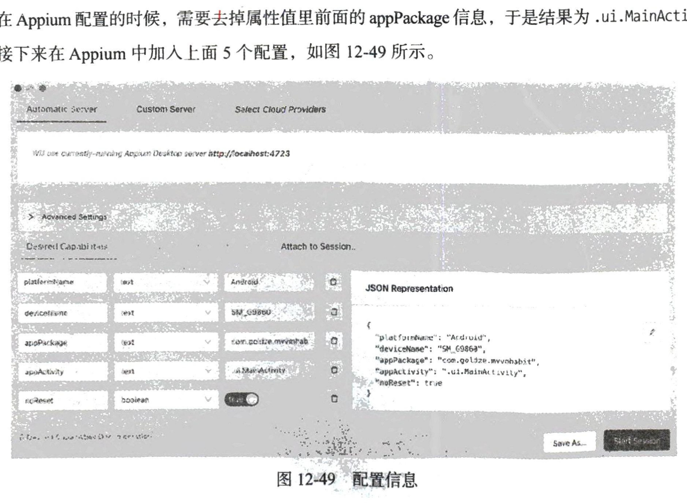
点击 Save As... 按钮将配置信息保存下来,以后就可以继续使用这个配置。然后点击 Start Session按钮,即可启动 Android手机上的App并进入启动页面。同时,电脑端会弹出一个调试窗口,我们可以从这个窗口预览当前的手机页面,以及查看页面源代码,如图12-50所示。
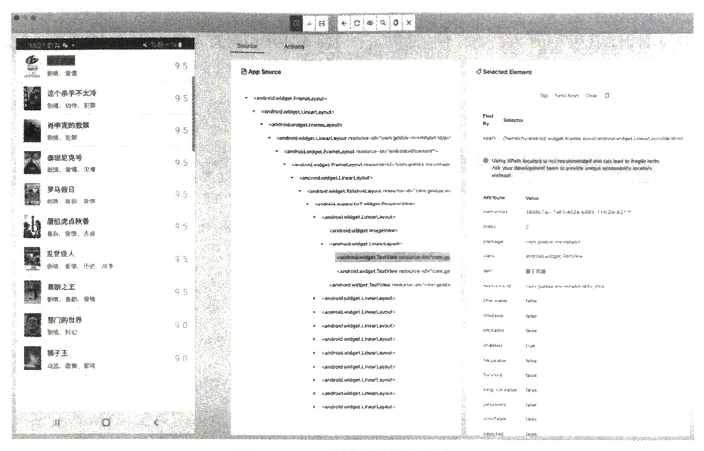
点击左栏中手机页面的某个元素,它就会高亮显示,如这里的电影名称“霸王别姬”。这时中间栏会显示它对应的源代码;右栏会显示它的基本信息,如 index、class、text等。我们还可以在右栏执行一些操作,如Tap、Send Keys、Clear,现在点击右栏的Tap按钮,即执行点击操作,如图12-51所示。
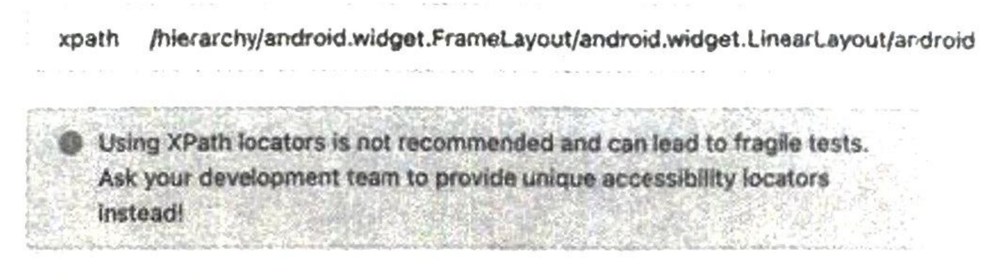
可以发现电脑端的页面发生了变化,如图12-52所示。
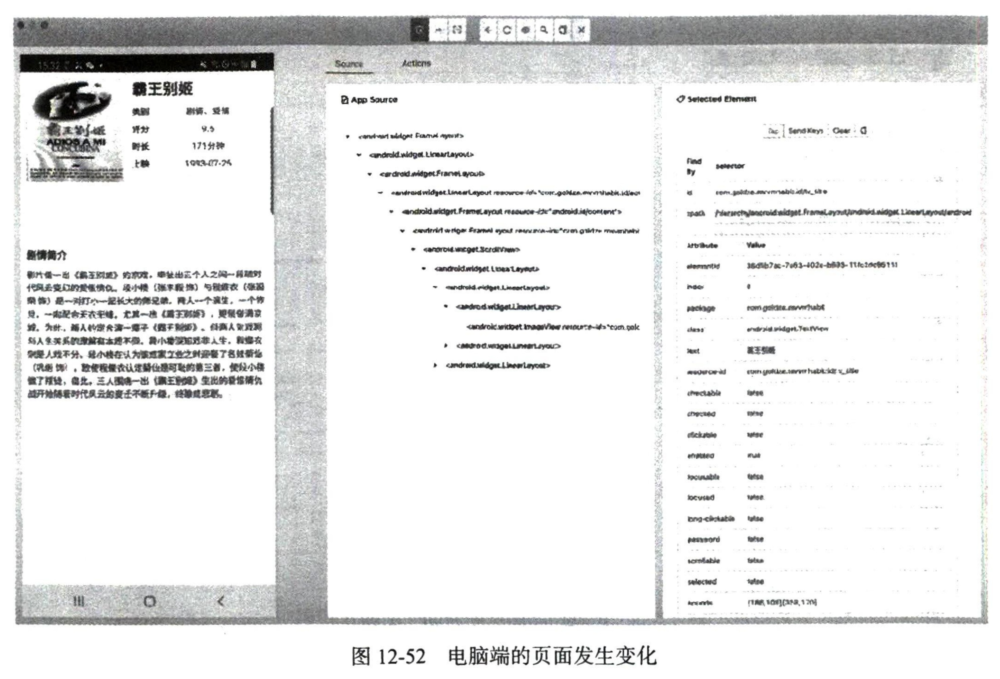
左栏的手机页面跳转到了《霸王别姬》电影的详情页,中间栏的Source 面板显示了当前页面的节点信息。那怎么返回呢?点击中间栏上方的Back 按钮,如图12-53所示。
这时就返回首页了。Appium 还提供了动作录制功能,如图12-54所示,点击中间栏上方的 Start Recording 按钮,Appium 就会开始录制,之后我们在窗口中操作App的行为都会被记录下来,Recorder面板中可以自动生成指定语言编写的代码。
例如,点击 Start Recording 按钮后,选中电影条目“初恋这件小事”,然后点击 Tap 按钮,再点击返回,可以看到Appium的 Recorder 面板中出现了这些过程的操作代码,如图12-55所示。这里我们选择的语言是Python,代码逻辑是选中某个节点然后执行点击操作,接着返回,和我们手工操作的内容一一对应。总结一下,我们通过在电脑端弹出的调试窗口中点击不同的动作按钮,即可实现对App的控制,同时 Recorder 面板可以生成对应的代码。在Appium 客户端控制和操作App的方法就介绍完了。下面我们看看使用Python 代码打开App的方法,这里需要借助我们已经安装好的Appium的Python 库实现。首先在代码中指定一个Appium服务,而这个服务在刚才打开 Appium 的时候就已经开启了,运行在4723端口上,配置如下所示:
server = 'http://localhost:4723/wd/hub'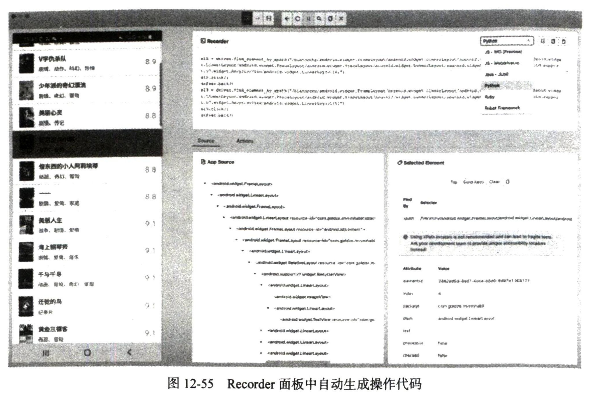
接下来用字典配置 Desired Capabilities 参数，代码如下：
desired_capabilities = {
"platformName": "Android",
"deviceName": "SM_G9860",
"appPackage": "com.goldze.mvvmhabit",
"appActivity": ".ui.MainActivity",
"noReset": True
}新建一个 Session，这和点击 Appium 内置驱动器的 Start Session 按钮功能相同，代码实现如下：
from appium import webdriver
driver = webdriver.Remote(server, desired_capabilities)配置完成后，运行代码就可以启动示例App了，但现在仅仅能启动App，还不能做任何动作。接下来实现一个加载等待和下拉的逻辑：
from selenium.webdriver.common.by import By
from selenium.webdriver.support import expected_conditions as EC
from selenium.webdriver.support.ui import WebDriverWait
wait = WebDriverWait(driver, 30)
wait.until(EC.presence_of_all_elements_located(
(By.XPATH, '//android.support.v7.widget.RecyclerView/android.widget.LinearLayout')))
window_size = driver.get_window_size()
width, height = window_size.get('width'), window_size.get('height')
driver.swipe(width * 0.5, height * 0.8, width * 0.5, height * 0.2, 1000)这段代码先确保所有电影条目加载成功。因为一个电影条目对应一个 android.widget.LinearLayout节点，这些节点的父节点是 android.support.v7.widget.RecyclerView，所以这里构造了一个取值为//android.support.v7.widget.RecyclerView/android.widget.LinearLayout 的XPath，用来查找每个电影条目，外层 presence_of_all_elements_located 的意思是确保所有电影条目都加载出来，其外再套一层 WebDriverWait 对象的 until 方法，设置加载的超时时间为30秒。于是，最长会等待30秒，如果这期间所有电影条目都加载出来,就立即向下执行,如果没有加载成功,就代表数据加载失败,抛出超时异常。接着获取了手机页面的宽高信息,然后调用swipe 方法执行了一次屏幕滑动,这个方法接收5个参数,分别是x1、y1、x2、y2、duration。其中x1、y1标识了滑动的初始位置,x2、y2 标识了滑动的结束位置,分别是两个位置相对屏幕左上角的横纵坐标,左上角的坐标是(0,0),向右为x轴的正方向,向下为y轴的正方向。这里设置x1为手机页面宽度的0.5倍,设置y1为手机页面高度的0.8倍,x2 同样为手机页面宽度的0.5倍,y2 则是手机页面高度的0.3倍。duration 是滑动时间,这里设置为1000(单位为毫秒),即1秒。滑动效果如图12-56中的红色箭头所示。我们模拟了垂直向上滑动,触发加载下一页数据的过程。综上所述,完整的代码如下:
from appium import webdriver
from selenium.webdriver.common.by import By
from selenium.webdriver.support import expected_conditions as EC
from selenium.webdriver.support.ui import WebDriverWait
server = 'http://localhost:4723/wd/hub'
desired_capabilities = {
"platformName": "Android",
"deviceName": "SM_G9860",
"appPackage": "com.goldze.mvvmhabit",
"appActivity": ".ui.MainActivity",
"noReset": True
}
driver = webdriver.Remote(server, desired_capabilities)
wait = WebDriverWait(driver, 30)
wait.until(EC.presence_of_all_elements_located(
(By.XPATH, '//android.support.v7.widget.RecyclerView/android.widget.LinearLayout')))
window_size = driver.get_window_size()
width, height = window_size.get('width'), window_size.get('height')
driver.swipe(width * 0.5, height * 0.8, width * 0.5, height * 0.2, 1000)重新运行代码,App会重启,首页的电影数据加载出来之后,屏幕会向上滑动一下,接着第2页电影数据成功加载出来。
3. Appium 的相关 API
本节我们来总结一下 Appium 的相关API怎么用。使用的Python 库是 Appium-Python-Client (https://github.com/appium/python-client),此库继承自 Selenium,因此使用方法与 Selenium 有很多共同之处。
初始化
需要先配置启动App的Desired Capabilities 参数,完整的配置说明可以参考https://github.com/appium/appium/blob/master/docs/en/writing-running-appium/caps.md,一般配置几个基本参数即可:
from appium import webdriver
server = 'http://localhost:4723/wd/hub'
desired_capabilities = {
"platformName": "Android",
"deviceName": "SM G9860",
"appPackage": "com.goldze.mvvmhabit",
"appActivity": ".ui.MainActivity",
"noReset": True
}
driver = webdriver.Remote(server, desired_capabilities)这样 Appium 就会自动按照 Desired Capabilities 参数设置的内容查找手机上的包名和入口类,然后将 App 启动。如果没有事先在手机上安装要打开的App,可以直接指定参数 app 为安装包所在的路径,这样程序启动时就会自动在手机上安装并启动App,代码如下:
from appium import webdriver
server = 'http://localhost:4723/wd/hub'
desired_capabilities = {
'platformName': 'Android',
'deviceName': 'SM_G9860',
'app': './scrape_app5.apk'
}
driver = webdriver.Remote (server, desired_capabilities)查找节点
可以使用和 Selenium 类似的通用查找方法来查找节点,代码如下:
el = driver.find_element_by_id('<package>:id/<id>')Selenium 中其他用来查找节点的方法在此处也同样适用,不再赘述。还可以使用 UIAutomator 查找节点,针对 Android 平台的代码如下:
el = self.driver.find_element_by_android_uiautomator ('new UiSelector().description("Animation")')
els = self.driver.find_elements_by_android_uiautomator('new UiSelector().clickable(true)')针对iOS平台的代码如下:
el = self.driver.find_element_by_ios_uiautomation('.elements()[0]')
els = self.driver.find_elements_by_ios_uiautomation ('.elements()')此外,使用iOS Predicates 查找节点的代码如下:
el = self.driver.find_element_by_ios_predicate('wdName == "Buttons"')
els = self.driver.find_elements_by_ios_predicate('wdValue == "SearchBar" AND isWDDivisible == 1')使用iOS Class Chain 查找节点的代码如下:
el = self.driver.find_element_by_ios_class_chain('XCUIElementTypeWindow/XCUIElementTypeButton[3]')
els = self.driver.find_elements_by_ios_class_chain('XCUIElementTypeWindow/XCUIElementTypeButton')点击屏幕
可以使用 tap 方法模拟点击操作,该方法能够模拟手指点击(最多五个手指),设置和屏幕的接触时长(单位为毫秒),定义如下:
tap(self, positions, duration=None)参数有 positions 和 duration。
positions: 点击位置组成的列表。
duration: 点击持续的时间。实例如下:
driver.tap([(100, 20), (100, 60), (100, 100)], 500)运行这行代码,就可以模拟点击手机页面中几个指定位置的点。另外,我们可以直接调用 click 方法模拟点击某个节点(如按钮)的操作,实例如下:
button = find_element_by_id('<package>:id/<id>')
button.click()这里先获取节点,然后调用click 方法模拟点击该节点。
屏幕滑动
可以使用 scroll方法模拟屏幕滑动,其定义如下:
scroll(self, origin_el, destination_el)表示从元素 origin_el 滑动至元素 destination_el。实例如下:
driver.scroll(el1, el2)还可以使用 swipe 方法模拟从A点滑动到B点的动作,这个方法之前已经应用过,其定义如下:
swipe(self, start_x, start_y, end_x, end_y, duration=None)参数有 start_x、start_y、end_x, end_y 和 duration.
start x:开始位置的横坐标。
start_y:开始位置的纵坐标。
end_x:结束位置的横坐标。
end_y:结束位置的纵坐标。duration:持续时间,单位为毫秒。实例如下:
driver.swipe(100, 100, 100, 400, 5000)运行这行代码,可以在5秒内由点(100,100)滑动到点(100,400)。另外可以使用flick方法模拟从A点快速滑动到B点的动作,用法如下:
flick(self, start_x, start_y, end_x, end_y)参数有 start_x、start_y、end_x 和end_y.
start x:开始位置的横坐标。
start_y:开始位置的纵坐标。
end_x:结束位置的横坐标。
end_y:结束位置的纵坐标。实例如下:
拖动
driver.flick(100, 100, 100, 400)可以使用 drag_and_drop 方法模拟把一个节点拖动到另一个节点处的动作,其用法如下:
drag_and_drop(self, origin_el, destination_el)可以把节点 origin_el 拖动到节点 destination_el 处。参数有 origin_el 和 destination_el.
original_el:被拖动的节点。
destination_el:目标节点。实例如下:
driver.drag_and_drop(el1, el2)文本输入
可以使用 set_text方法模拟文本输入,实例如下:
el = find_element_by_id('<package>:id/cjk')
el.set_text('Hello')这里先选中一个文本框元素,然后调用set_text方法输入文本。
动作链
与Selenium 中的ActionChains 类似,Appium 中的TouchAction 可支持tap、press、long_press、release、move_to、wait、cancel等方法,实例如下:
el = self.driver.find_element_by_accessibility_id('Animation')
action = TouchAction(self.driver)
action.tap(el).perform()这里首先选中一个节点,然后利用 TouchAction 点击此节点。如果想实现拖动操作,可以这样:
els = self.driver.find_elements_by_class_name('listView')
a1 = TouchAction()
a1.press(els[0]).move_to(x=10, y=0).move_to(x=10, y=-75).move_to(x=10, y=-600).release()
a2 = TouchAction()
a2.press(els[1]).move_to(x=10, y=10).move_to(x=10, y=-300).move_to(x=10, y=-600).release()利用本节所讲的API,可以完成绝大部分自动化操作。更多的API详情可以参考https://appium.io/docs/en/about-appium/api/。
4. 总结
本节我们主要了解了Appium操作App的基本用法,以及常用API的用法,在12.5节我们会用一个实例演示 Appium的使用方法。本节代码见 https://github.com/Python3WebSpider/AppiumTest。
12.5 基于 Appium 的 App 爬取实战
本节中我们会完整地讲述如何用Appium 爬取一个App。
1. 准备工作
本节的准备工作和12.4节基本一样,请参考那里。另外,本节会用到一个日志输出库loguru,可以使用pip3工具安装:
2. 思路分析
pip3 install loguru首先,我们观察一下整个app5的交互流程,其首页分条显示了电影数据,每个电影条目都包括封面、标题、类别和评分4个内容,点击一个电影条目,就可以看到这个电影的详情介绍,包括标题、类别、上映时间、评分、时长、电影简介等内容。可见详情页的内容远比首页丰富,我们需要依次点击每个电影条目,抓取看到的所有内容,把所有电影条目的信息都抓取下来后回退到首页。另外,首页一开始只显示10个电影条目,需要上拉才能显示更多数据,一共100条数据。所以为了爬取所有数据,我们需要在适当的时候模拟手机的上拉操作,以加载更多数据。综上,这里总结出基本的爬取流程。
遍历现有的电影条目,依次模拟点击每个电影条目,进入详情页。
爬取详情页的数据,爬取完毕后模拟点击回退按钮的操作,返回首页。
当首页的所有电影条目即将爬取完毕时,模拟上拉操作,加载更多数据。
在爬取过程中,将已经爬取的数据记录下来,以免重复爬取。
100条数据全部爬取完毕后,终止爬取。
3. 基本实现
现在我们着手实现整个爬取流程吧。在编写代码的过程中,我们依然需要用Appium 观察现有App的源代码,以便编写节点的提取规则。和12.4节类似,启动Appium服务,然后启动 Session,打开电脑端的调试窗口,如图12-57所示。
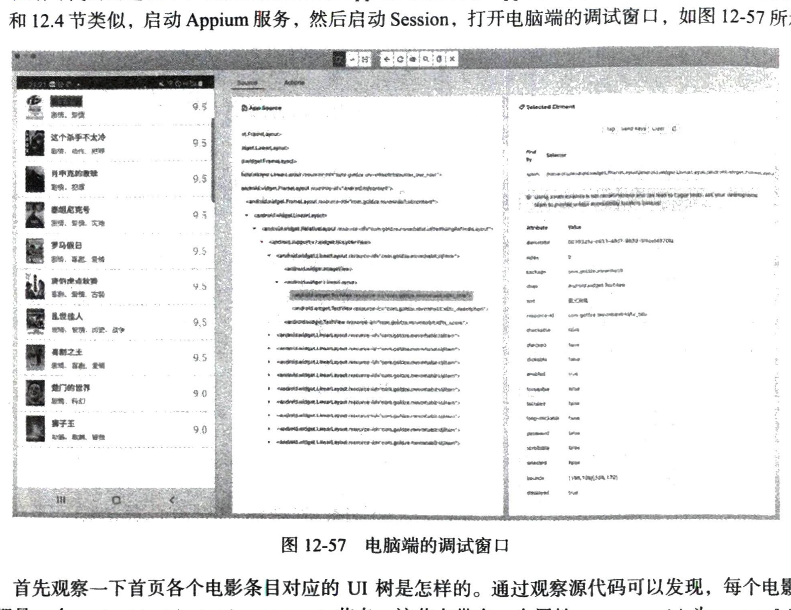
首先观察一下首页各个电影条目对应的UI 树是怎样的。通过观察源代码可以发现,每个电影条目都是一个 android.widget.LinearLayout 节点,该节点带有一个属性 resource-id 为 com.goldze.mvvmhabit:id/item,条目内部的标题是一个 android.widget.TextView 节点,该节点带有一个属性resource-id,属性值是 com.goldze.mvvmhabit:id/tv_title。我们可以先选中所有的电影条目节点,同时记录电影标题以去重。
接下来做一些初始化声明:
from appium import webdriver
from selenium.webdriver.common.by import By
from selenium.webdriver.support import expected_conditions as EC
from selenium.webdriver.support.ui import WebDriverWaitfrom selenium.common.exceptions import NoSuchElementException
SERVER = 'http://localhost:4723/wd/hub'
DESIRED_CAPABILITIES = {
"platformName": "Android",
"deviceName": "SM G9860",
"appPackage": "com.goldze.mvvmhabit",
"appActivity": ".ui.MainActivity",
"noReset": True
}
PACKAGE_NAME = DESIRED_CAPABILITIES['appPackage']
TOTAL_NUMBER = 100这里我们首先声明了 SERVER 变量,即 Appium 在本地启动的服务地址。接着声明了 DESIRED_CAPABILITIES,这就是 Appium 启动示例 App 的配置参数,其中的 deviceName 需要更改成自己手机的model 名称,具体的获取方式可以参考 12.4 节的内容。另外,这里额外声明了一个变量 PACKAGE_NAME,即包名,这是为后续编写获取节点的逻辑准备的。最后声明 TOTAL_NUMBER 为 100,代表电影条目的总数为 100,之后以此作为判断爬取终止的条件。
接下来,我们声明 driver 对象,并初始化一些必要的对象和变量:
driver = webdriver.Remote (SERVER, DESIRED_CAPABILITIES)
wait = WebDriverWait (driver, 30)
window_size = driver.get_window_size()
window_width, window_height = window_size.get('width'), window_size.get('height')这里的 wait 变量就是一个 WebDriverWait 对象,调用它的 until 方法可以实现如果查找到目标节点就立即返回,如果等待 30 秒还查找不到目标节点就抛出异常。我们还声明了 window_width、window_height 变量,分别代表屏幕的宽、高。
初始化的工作完成,下面先爬取首页的所有电影条目:
def scrape_index():
items = wait.until(EC.presence_of_all_elements_located(
(By.XPATH, f'//android.widget.LinearLayout[@resource-id="{PACKAGE_NAME}:id/item"]')))
return items这里实现了一个 scrape_index 方法,使用 XPath 选择对应的节点,开头的 // 代表匹配根节点的所有子孙节点,即所有符合后面条件的节点都会被筛选出来,这里对节点名称 android.widget.LinearLayout和属性 resource-id 进行了组合匹配。在外层调用了 wait 变量的 until 方法,最后的结果就是如果符合条件的节点加载出来,就立即把这个节点赋值为 items 变量,并返回 items,否则抛出超时异常。所以在正常情况下,使用 scrape_index 方法可以获得首页上呈现的所有电影条目的数据。
接下来就可以定义一个 main 方法来调用 scrape_index 方法了:
from loguru import loggerdef main():
elements = scrape_index()
for element in elements:
element_data = scrape_detail(element)
logger.debug(f'scraped data {element_data}')if __name__ == '__main__':
main()这里在 main 方法中首先调用 scrape_index 方法提取了当前首页的所有节点,然后遍历这些节点,并想通过一个 scrape_detail 方法提取每部电影的详情信息,最后返回并输出日志。
那么问题明确了,scrape_detail 方法如何实现?大致思考一下,可以想到该方法需要做到如下三件事情。
模拟点击 element,即首页的电影条目节点。
进入详情页后爬取电影信息。
点击回退按钮后返回首页。所以,这个方法实现为:
def scrape_detail(element):
logger.debug(f'scraping {element}')
element.click()
wait.until(EC.presence_of_element_located(
(By.ID, f'{PACKAGE_NAME}:id/detail')))
title = wait.until(EC.presence_of_element_located(
(By.ID, f'{PACKAGE_NAME}:id/title'))).get_attribute('text')
categories = wait.until(EC.presence_of_element_located(
(By.ID,
f'{PACKAGE_NAME}:id/categories_value'))).get_attribute('text')
score = wait.until(EC.presence_of_element_located(
(By.ID,
f'{PACKAGE_NAME}:id/score_value'))).get_attribute('text')
minute = wait.until(EC.presence_of_element_located(
(By.ID, f'{PACKAGE_NAME}:id/minute_value'))).get_attribute('text')
published_at = wait.until(EC.presence_of_element_located(
(By.ID, f'{PACKAGE_NAME}:id/published_at_value'))).get_attribute('text')
drama = wait.until(EC.presence_of_element_located(
(By.ID, f'{PACKAGE_NAME}:id/drama_value'))).get_attribute('text')
driver.back()
return {
'title': title,
'categories': categories,
'score': score,
'minute': minute,
'published_at': published_at,
'drama': drama
}实现该方法需要先弄清楚详情页每个节点对应的节点名称、属性都是怎样的,于是再次打开调试窗口,点击一个电影标题进入详情页,查看其DOM树,如图12-58所示。
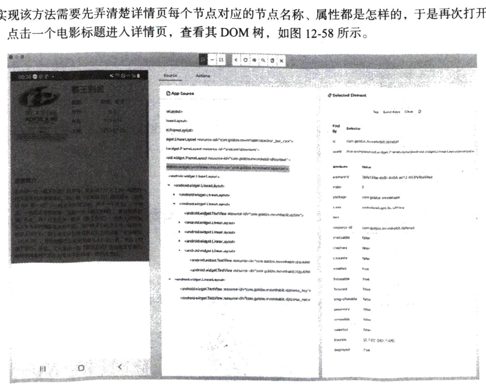
可以观察到整个详情页对应一个 android.widget.ScrollView 节点,其包含的resource-id 属性值为 com.goldze.mvvmhabit:id/detail。详情页上的标题、类别、评分、时长、上映时间、剧情简介也都有各自的节点名称和 resource-id,这里不展开描述了,从Appium的Source 面板里面即可查看。在 scrape_detail 方法中,首先调用 element 的click 方法进入对应的详情页,然后等待整个详情页的信息(即com.goldze.mvvmhabit:id/detail)加载出来,之后顺次爬取了标题、类别、评分、时长、上映时间、剧情简介,爬取完毕后模拟点击回退按钮,最后将所有爬取的内容构成一个字典返回。其实到现在,我们已经可以成功获取首页最开始加载的几条电影信息了,运行一下代码,返回结果如下:
2021-02-24 00:35:42.929 | DEBUG
| __main__:scrape_detail:31 - scraping <appium.webdriver.webelement.
WebElement (session="14f506d1-248f-438e-918b-382cb5ceb6aa", element="eb3e768f-37ef-4c7d-9d3b-3fdcd84b6101")>
2021-02-24 00:35:44.512 | DEBUGmain_main:68 - scraped data {'title':'霸王别姬', 'categories':'剧情、爱情','Score': '9.5', 'minute': '171 分钟', 'published_at': '1993-07-26', 'drama':'影片借一出《霸王别姬》的京戏,牵扯出三个人之间一段随时代风云变幻的爱恨情仇。段小楼(张丰毅饰)与程蝶衣(张国荣饰)是一对打小一起长大的师兄弟,两人一个演生,一个饰旦,一向配合天衣无缝,...'}
4. 上拉加载更多数据
2021-02-24 00:35:44.513 | DEBUG | __main__:scrape_detail:31 - scraping <appium.webdriver.webelement.
WebElement (session="14f506d1-248f-438e-918b-382cb5ceb6aa", element="62a0c23e-dodb-4428-93ad-754ca4f67e6a")>现在在上面代码的基础上,加入上拉加载更多数据的逻辑,因此需要判断在什么时候上拉加载数据。想想我们平时在浏览数据的时候是怎么操作的呢?一般是在即将看完的时候上拉,那这里也一样,可以让程序在遍历到位于偏下方的电影条目时开始上拉。例如,当爬取的节点对应的电影条目差不多位于页面高度的80%时,就触发上拉加载。将main方法改写如下:
def main():
elements = scrape_index()
for element in elements:
element_location = element.location
element_y = element_location.get('y')
if element_y / window_height > 0.8:
logger.debug(f'scroll up')
scroll_up()
element_data = scrape_detail(element)
logger.debug(f'scraped data {element_data}')这里在遍历时判断了 element 的位置,获取了其y坐标值,当该值小于页面高度的80%时,触发上拉加载,加载方法是 scroll_up,其定义如下:
def scroll_up():driver.swipe(window_width * 0.5, window_height * 0.8,window_width * 0.5, window_height * 0.5, 1000)这个上拉逻辑的实现和12.4节基本一样,只是上拉动作的起始位置和结束位置有所变化。这样,在爬取过程中就可以自动触发下一页电影条目的加载了。
5. 去重、终止和保存数据
在本节开始部分我们曾提到,需要额外添加根据标题进行去重和判断终止的逻辑,所以在遍历首页中每个电影条目的时候还需要提取一下标题,然后将其存入一个全局变量中:
def get_element_title(element):
try:
element_title = element.find_element_by_id(f'{PACKAGE_NAME}:id/tv_title').get_attribute('text')
return element_title
except NoSuchElementException:
return None这里定义了一个 get_element_title 方法,该方法接收一个 element 参数,即首页电影条目对应的节点对象,然后提取其标题文本并返回。最后将 main 方法修改如下:
scraped_titles = []
def main():
while len(scraped_titles) < TOTAL_NUMBER:
elements = scrape_index()
for element in elements:
element_title = get_element_title(element)
if not element_title or element_title in scraped_titles:continue
element_location = element.location
element_y = element_location.get('y')
if element_y/ window_height > 0.8:
logger.debug(f'scroll up')
scroll_up()
element_data = scrape_detail(element)
scraped_titles.append(element_title)
logger.debug(f'scraped data {element_data}')这里在 main 方法里添加了while 循环,如果爬取的电影条目数量尚未达到目标数量 TOTAL_NUMBER,就接着爬取,直到爬取完毕。其中就调用 get_element_title 方法提取了电影标题,然后将已经爬取的电影标题存储在全局变量 scraped_titles中,如果经判断,当前节点对应的电影已经爬取过了,就跳过,否则接着爬取,爬取完毕后将标题存到 scraped_titles 变量里,这样就实现去重了。
6. 保存数据
最后,可以再添加一个保存数据的逻辑,将爬取的数据保存到本地 movie 文件夹中,数据以 JSON形式保存,代码如下:
import os
import jsonOUTPUT_FOLDER = 'movie'
os.path.exists(OUTPUT_FOLDER) or os.makedirs (OUTPUT_FOLDER)def save_data(element_data):
with open(f'{OUTPUT_FOLDER}/{element_data.get("title")}.json', 'w', encoding='utf-8') as f:
f.write(json.dumps(element_data, ensure_ascii=False, indent=2))
logger.debug(f'saved as file {element_data.get("title")}.json')在 main 方法添加调用逻辑即可:
save_data(element_data)7. 运行结果
我们再运行一下main方法,看看最后的爬取结果:
2021-02-24 01:01:04.269 | DEBUG | __main__:scrape_detail:33 - scraping <appium.webdriver.webelement.
WebElement (session="2776e217-8d9d-49b3-89ce-888bf8656c93", element="63b27a1f-8ecb-4ebb-b4c0-1621382eff4f")>
2021-02-24 01:01:05.724 | DEBUG| __main__:main:107 - scraped data {'title':'美丽人生','categories': '战争、剧情、爱情', 'score': '9.1','minute':'116 分钟','published_at': '2020-01-03','drama':'犹太青年圭多(罗伯托·贝尼尼饰)邂逅美丽的女教师朵拉(尼可莱塔·布拉斯基饰),他彬彬有礼的向多拉鞠躬:“早安!公主!”历经诸多令人啼笑皆非的周折后,天遂人愿,...'}
2021-02-24 01:01:05.725 | DEBUG | __main__:save_data:76 - saved as file 美丽人生.json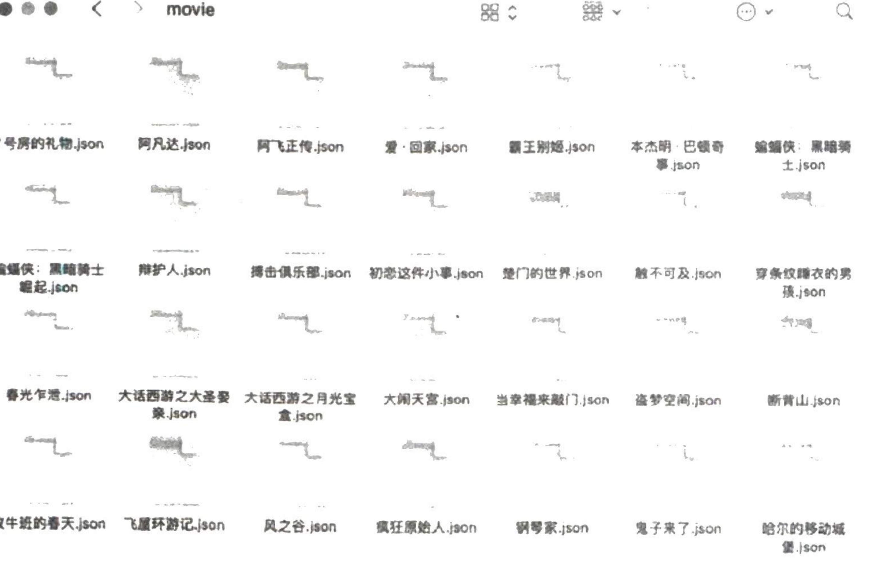
至此，我们成功利用 Appium 爬取了示例 App 的所有电影数据，并把爬取结果保存成了 JSON文件。
8. 总结
本节我们通过一个实战案例介绍了利用 Appium 爬取 App 数据的过程，学完这节后，App 的自动化爬取不再是难题。本节代码见 https://github.com/Python3WebSpider/AppiumTest。
12.6 Airtest 的使用
有了 Appium，我们已经可以方便地自动化控制 App，但在使用过程中或多或少还会有些不方便的地方，例如连接的稳定性一般、提供的 API 功能有限等。这里我们再介绍一个更好用的自动化测试工具——Airtest，它提供了一些更好用的 API，以及一个非常强大的 IDE，开发效率和响应速度与 Appium 相比也有提升。
1. Airtest 介绍
Airtest Project 是网易游戏推出的一款自动化测试框架，其项目由如下几部分构成。
Airtest：一个跨平台的、基于图像识别的 UI 自动化测试框架，适用于游戏和 App，支持Windows、Android 和 iOS 平台，基于 Python 实现。
Poco：一款基于 UI 组件识别的自动化框架，目前支持 Unity3D、cocos2dx、Android 原生App、iOS 原生 App 和微信小程序，也可以在其他引擎中自行接入 poco-sdk 使用，基于 Python实现。
AirtestIDE：提供一个跨平台的 UI 自动化测试编辑器，内置了 Airtest 和 Poco 的相关插件功能，能够快速、简单地编写 Airtest 和 Poco 代码。
AirLab：真机自动化云测试平台，目前提供 Top 100 手机兼容性测试、海外云真机兼容性测试等服务。
私有化手机集群技术：从硬件到软件，提供在企业内部私有化手机集群的解决方案。
总之,Airtest 建立了一个比较完善的自动化测试方案,我们能利用它实现所见即所爬,个人认为比 Appium 更加简单易用。本节我们先简单了解 Airtest IDE 的基本使用,同时介绍一些 Airtest 和 Poco的基本 API 用法,12.7 节用它实际爬取一个 App。
2. 准备工作
请确保已经安装好 AirtestIDE、Airtest Python 库和 Poco Python 库。只使用 AirtestIDE 实现自动化模拟和数据爬取也是没问题的,因为它里面已经内置了 Python 模块、Airtest Python 库和 Poco Python 库,并且提供了非常便捷的可视化点选和代码生成等功能,即使使用者没有任何 Python 基础,也能自动化控制 App 和完成数据爬取。但是对于需要爬取大量数据和控制页面跳转的场景而言,仅依靠可视化点选和自动生成代码来自动化控制 App,其实是不灵活的。进一步讲,如果我们加入一些代码逻辑,例如流程控制、循环控制语句,就可以爬取批量数据了,这时候需要依赖 Airtest、Poco 以及一些自定义逻辑和第三方库。Airtest 的官方文档(https://airtest.doc.io.netease.com/tutorial/1_quick_start_guide/)中已经详细介绍了 Airtest 的安装方式,包括 AirtestIDE、Airtest Python 库和 Poco Python 库。所以,这里建议同时安装 AirtestIDE、Airtest 和 Poco。安装完 AirtestIDE 之后,它还会安装一个 Python 环境,这个环境中附带安装了 Airtest Python 库和 Poco Python 库,不过这个被打包在 AirtestIDE 里面的环境,和系统里安装的 Python 环境并不是同一个,所以推荐直接使用 pip3 工具将 Airtest Python 库和 Poco Python 库安装到系统的 Python 环境下。安装 Airtest Python 库的命令如下:
pip3 install airtest安装 Poco Python 库的命令如下:
pip3 install pocoui安装完成后,在 AirtestIDE 中把默认的 Python 环境由 AirtestIDE 附带的 Python 环境更换成系统的 Python 环境。打开 AirtestIDE 菜单的“选项”→“设置”,页面如图 12-60 所示。
可以看到其中有一个选项是“自定义Python.exe 路径”,将其值修改为系统的Python 路径即可,具体的设置方法可以进一步参考https://airtest.doc.io.netease.com/IDEdocs/settings/1_ide_settings/#python。安装好 Airtest IDE、Airtest Python 库和 Poco Python库之后,准备一台Android 真机或者模拟器,真机的话还需要通过USB线和电脑相连,确保 adb 能够正常连接到手机,具体的设置方法可以参考
https://airtest.doc.io.netease.com/tutorial/1_quick_start_guide/#_4。如果以上的准备工作在操作过程中遇到问题,可以在 https://setup.scrape.center/airtest 参考更加详细的配置。
3. AirtestIDE 体验
我用一台 Android 真机演示 AirtestIDE 的使用方式。首先确保可以使用adb 正常获取手机的相关信息,如执行如下命令:adb devices如果能正常输出手机的相关信息,则证明连接成功,示例输出如下:adb server version (40) doesn't match this client (41); killing...
daemon started successfully
List of devices attached R5CN30RMOQL device从中能看到我的设备名称为R5CN30RM0QL。然后启动 AirtestIDE,打开菜单中的“文件”→“新建脚本”→“.air Airtest 项目”,新建一个脚本,页面如图12-61所示。
选定一个路径,将脚本命名为script.air,之后点击“确定”,进入如图12-62所示的页面。
正常情况下,在图12-62右侧可以看到已经连接的设备,如果没有看到,可以查看https://airtest.doc.io.netease.com/IDEdocs/device_connection/2_android_faq/来排查问题出在哪。接下来点击设备列表右侧的connect 按钮,如图12-63所示。此时往往就可以在AirtestIDE 中看到手机的屏幕了,如图12-64所示。
我们可以点击页面中的屏幕对手机进行控制,如果出现了连接问题,可以参考https://airtest.doc.io.netease.com/IDEdocs/device_connection/2_android_faq/中的描述来排查常见问题并尝试解决。
至此,请一定确保已完成的步骤都成功了,否则之后的内容将无法进行。我们再来观察一下整个 AirtestIDE页面,分为左、中、右三部分,以下内容为对各组件的介绍。
左侧靠上的部分是Airtest 辅助窗,可以通过一些点选操作实现基于图像识别的自动化配置。
左侧中间偏上的部分是Poco 辅助窗,可以通过一些点选操作实现基于UI组件识别的自动化配置。
中间靠上的部分是脚本编辑窗,即代码编写区域,可以通过 Airtest 辅助窗和Poco 辅助窗自动生成代码,也可以自己编写代码,这个代码是基于Python语言的。
中间靠下的部分是 Log 查看窗,即日志区域,会输出运行、调试时的一些日志。
右侧是设备窗,内容为手机屏幕,用鼠标直接点击这个屏幕,真机或模拟器的屏幕也会跟着变化,而且响应速度非常快。
4. Airtest 的图像识别与自动化控制
Airtest 可以基于图像识别来自动化控制App,本节我们就体验一下这个功能。例如先点击左侧的touch 按钮,意思是点击屏幕上的某个位置,如图12-65所示。
这时 AirtestIDE 会提示我们在右侧的手机屏幕上截图,这里我截取的是“大众点评”App的图标,会发现script.air 脚本中出现了一行代码。代码内容为touch方法,其参数是刚截取的图片,如图12-66所示。
然后在右侧的手机屏幕上点击“大众点评”的图标,进入这个App,再点击左侧的wait按钮,意思是等待指定内容加载出来,之后同样根据提示截图,如截取首页左上角的“美食”图标,如图12-67所示。
再后点击左侧的 swipe 按钮,意思是滑动屏幕,操作示意和结果如图12-68所示。
这时 AirtestIDE 会提示我们框选一个位置。联想自己平时滑动屏幕的场景,手指一开始先放在一个位置,然后滑动,到某个位置后停止。那么这时第一步需要框选的位置就是手指一开始需要放置的位置,例如图12-68中标1的地方——中间的菜单栏(菜单栏下方加载的内容会变化,故选择相比之下更加通用不变的菜单栏作为识别目标)。框选完毕后,AirtestIDE 会提示我们点选一个滑动的目标位置,这时选择框选位置上方的一个点即可,如图 12-68 中标2的地方。此时会发现 script.air 脚本中生成了swipe 方法,其第一个参数是我们框选的菜单栏的图片,第二个参数是一个 vector,代表滑动方向。这样我们就通过一些可视化的配置完成了自动化控制。最后我们再通过左侧的keyevent 按钮添加两个键盘事件,在已经生成的代码的开头和结尾分别添加一个HOME键盘事件,代表进入首页和返回首页,添加结果如图12-69所示。
现在总结一下我们实现自动化控制的流程,分以下几步。(1)进入手机首页。(2)点击“大众点评”App的图标。(3)等待左上角的“美食”图标加载出来。(4)向上滑动手机屏幕。(5)返回手机主页。怎么样,是不是很简单?注意每个手机的内容可能不一样,灵活配置就好了，示例的作用主要是让大家熟悉一些操作流程。接下来点击 script.air 脚本上方的运行按钮(三角按钮),会发现 AirtestIDE 可以驱动手机完成指定操作了,和我们期望的流程——模一样,点击、等待、滑动操作顺次执行,且“Log查看窗”会显示执行的具体过程,如图12-70所示。以上便是 Airtest 提供的基于图像识别来自动化控制 App的过程,利用这项技术,我们不用编写任何代码就可以让手机自动操作。
其实 script.air 脚本内部对应的就是Python代码,只不过利用 AirtestIDE封装了一层,使得编写和操作更加简单了。我们可以追踪一下源码,在当前脚本的选项卡上右击,在弹出的菜单项中选择“打开当前项目目录”,如图12-71所示。会看到源码内容如图12-72所示。
可以看到其中有 1 个 Python 脚本,和3张刚才截取的图片,打开Python 脚本:
from airtest.core.api import *
auto_setup(__file__)
keyevent("HOME")
touch(Template(r"tpl1622349860646.png", record_pos=(-0.12, 0.103), resolution=(1080, 2400)))
wait(Template(r"tpl1622350037160.png", record_pos=(-0.394, -0.826), resolution=(1080, 2400)))
swipe (Template(r"tpl1622350197166.png", record_pos=(-0.004, -0.419), resolution=(1080, 2400)),
vector=(-0.0278, -0.2121])
keyevent("HOME")可以看到其内容和AirtestIDE中自动生成的代码基本一致,不同之处在于这里用一个Template 对象代替了图片,该对象包含图片名、位置、分辨率三个参数,而AirtestIDE 对图片进行了可视化,使其更加直观。我们可以直接使用Python环境运行这个脚本吗?可以,但是需要在代码开始的 auto_setup(__file__)和 keyevent("HOME")之间添加一行代码 init_device()。调用init_device 方法的作用完成一些手机的初始化配置,不做这一步可能会有错误。运行脚本之后,会产生同样的效果——手机被自动化控制执行了一系列操作,同时控制台输出对应的操作日志,如图12-73所示。
至此,基于图像识别来自动化控制手机App的流程就介绍清楚了。
5. Airtest 的相关 API
上面的内容仅展示了Airtest Python库的冰山一角,本节列举一些它提供的便捷API。从刚才添加的 init_device 方法说起,这个方法就是用来连接设备并初始化一些连接对象的。如果设备没有初始化则会先初始化设备,并把初始化后的设备当作当前设备。这个方法定义如下:
def init_device(platform="Android", uuid=None, **kwargs):用法示例如下:
device = init_device('Android')
print(device)示例代码的运行结果如下:
<airtest.core.android.android.Android object at 0x1018f3a58>可以发现返回结果是一个 Android 对象。这个 Android 对象实际上属于airtest.core.android包,继承自 airtest.core.device.Device类,与之并列的对象还有airtest.core.ios.ios.IOS、airtest.core.linux.linux.Linux、airtest.core.win.win.Windows等。这些对象都有一些用来操作设备的API,下面我们以这个 Android 对象的API为例总结一下。get_default_device:获取默认设备。
uuid:获取当前设备的UUID。
list_app:列举设备上的所有App。
path_app:打印出某个App的完整路径。
check_app:检查某个App 是否在当前设备上。
start_app:启动某个App。
start_app_timing:启动某个App,并计算启动时间。
stop_app:停止某个App。
clear_app:清空某个App的全部数据。
install_app:安装某个App。
install_multiple_app:安装多个App。
uninstall_app:卸载某个App。
snapshot:获取屏幕截图。
shell:获取 adb shell命令的执行结果。
keyevent:执行键盘操作。
wake:唤醒当前设备。
home:点击 HOME 键。
text:向设备输入内容。
touch:点击屏幕上的某处。
double_click:双击屏幕上的某处。
swipe:滑动屏幕,由一点滑动到另外一点。
pinch:通过手指的捏合操作放大或缩小手机屏幕。
logcat:记录日志。
getprop:获取某个特定属性的值。
get_ip_address:获取IP地址。
get_top_activity:获取当前 Activity。
get_top_activity_name_and_pid:获取当前 Activity的名称和进程号。
get_top_activity_name:获取当前 Activity 的名称。
is_keyboard_shown:判断当前是否显示键盘了。
is_locked:判断设备是否锁定了。
unlock:解锁设备。
display_info:获取当前的显示信息,如屏幕宽高等。
get_display_info:同 display_info。
get_current_resolution:获取当前设备的分辨率。
get_render_resolution:获取当前渲染的分辨率。
start_recording:开始录制。
stop_recording:结束录制。
adjust_all_screen:调整屏幕的适配分辨率。
了解了这些API的功能之后,下面用一个实例感受一下它们的用法:
from airtest.core.android import Android
from airtest.core.api import *
import logging
logging.getLogger("airtest").setLevel(logging.WARNING)
device: Android = init_device('Android')
is_locked = device.is_locked()
print(f'is_locked: {is_locked}')
if is_locked:
device.unlock()device.wake()app_list = device.list_app()
print(f'app list {app_list}')uuid = device.uuid
print(f'uuid {uuid}')display_info = device.get_display_info()
print(f'display info {display_info}')resolution = device.get_render_resolution()
print(f'resolution {resolution}')ip_address = device.get_ip_address()
print(f'ip address {ip_address}')top_activity = device.get_top_activity()
print(f'top activity {top_activity}')is_keyboard_shown = device.is_keyboard_shown()
print(f'is keyboard shown {is_keyboard_shown}')这里我们调用API获取了设备的一些基本状态,运行结果如下:is locked: False app list ['com.kimcy929.screenrecorder', 'com.android.providers.telephony', 'io.appium.settings','com.android.providers.calendar', 'com.android.providers.media', 'com.goldze.mvvmhabit','com.android.wallpapercropper', 'com.android.documentsui', 'com.android.galaxy4','com.android.externalstorage', 'com.android.htmlviewer', 'com.android.quicksearchbox','com.android.mms.service', 'com.android.providers.downloads', 'mark.qrcode','com.google.android.play.games', 'io.kkzs', 'tv.danmaku.bili', 'com.android.captiveportallogin'] uuid emulator-5554
display info {'id': 0, 'width': 1080, 'height': 1920, 'xdpi': 320.0, 'ydpi': 320.0, 'size': 6.88, 'density': 2.0,
'fps': 60.0, 'secure': True, 'rotation': 0, 'orientation': 0.0, 'physical_width': 1080, 'physical_height': 1920}resolution (0.0, 0.0, 1080.0, 1920.0) ip address 10.0.2.15 top activity ('com.microsoft.launcher.dev', 'com.microsoft.launcher.Launcher', '16040') is keyboard shown False
从结果可以看到,借助一些常用的API,我们就完成了唤醒手机和获取App列表、UUID、显示器信息、分辨率、IP地址、当前运行的Activity、是否显示键盘等一系列操作。
获取当前设备
Airtest 中有一个全局变量 G,它的 DEVICE 属性代表当前的设备对象。直接调用 device 方法即可获取当前设备,该方法定义如下:
def device():
return G.DEVICE获取所有设备
获取所有设备的方法如下:
from airtest.core.android import Android
from airtest.core.api import *print(G.DEVICE_LIST)
uri= 'Android://127.0.0.1:5037/emulator-5554'
device: Android = connect_device(uri)
print(G.DEVICE_LIST)运行结果如下:
[]
[<airtest.core.android.android.Android object at 0x10ba03978>]DEVICE_LIST 是一个列表,元素是 Airtest 当前已经连接的设备。需要注意一点,在没有调用connect_device 方法时,DEVICE_LIST 是空的,调用connect_device 方法之后,DEVICE_LIST 中会自动添加已经连接的设备。
执行命令行
可以调用shell 方法,传入cmd 参数来执行命令行,该方法定义如下:@logwrap
def shell(cmd):
return G.DEVICE.shell (cmd)直接调用adb命令就可以了,例如执行如下命令获取内存信息:
from airtest.core.api import *uri = 'Android://127.0.0.1:5037/emulator-5554'
connect_device(uri)result = shell('cat /proc/meminfo')
print(result)运行结果如下:
MemTotal: 3627908 kB
MemFree: 2655560 kB
MemAvailable: 2725928 kB
Buffers: 3496 kB
Cached: 147472 kB
...DirectMap4k: 16376 kB DirectMap4M: 892928 kB这样我们就成功获取到了设备的内存信息描述。
启动和停止 App
调用设备的 start_app和 stop_app方法,然后传入App的包名,即可启动和停止这个App,两个方法的定义如下:@logwrap
def start_app(package, activity=None):
G.DEVICE.start_app(package, activity)@logwrap
def stop_app(package):
G.DEVICE.stop_app(package)用法示例如下:
from airtest.core.api import *uri = 'Android://127.0.0.1:5037/emulator-5554'
connect_device(uri)package = 'com.tencent.mm'
start_app(package)
sleep(10)
stop_app(package)这里我指定 package 为微信的包名,然后调用 start_app 方法启动了微信,等待10秒后,调用stop_app 方法停止了微信运行。
安装和卸载App
调用设备的 install 和 uninstall 方法,前者传入App的保存路径,后者传入 App的包名,即可安装和卸载对应的App,两个方法的定义如下:@logwrap
def install(filepath, **kwargs):
return G.DEVICE.install_app(filepath, **kwargs)@logwrap
截图
def uninstall(package):
return G.DEVICE.uninstall_app(package)调用 snapshot 方法获取屏幕截图,可以通过参数设置存储截图的文件名称和图片的质量等。该方法的声明如下:
def snapshot (filename=None, msg="", quality=ST.SNAPSHOT_QUALITY)用法示例如下:
from airtest.core.api import *uri = 'Android://127.0.0.1:5037/emulator-5554'
connect_device(uri)package = 'com.tencent.mm'
start_app(package)
sleep(3)
snapshot('weixin.png', quality=30)运行这段示例代码后,当前目录下会生成一个名为weixin.png的图片,如图12-74所示。
唤醒和回到首页
调用设备的 wake 和 home 方法,即可唤醒 App和回到首页,两个方法定义如下:@logwrap
def wake():
G.DEVICE.wake()@logwrap
def home():
G.DEVICE.home()这两个方法不需要任何参数,直接调用即可。
点击屏幕
调用 touch 方法点击屏幕,可以传入要点击的图片或者绝对位置,还可以指定点击次数,该方法声明如下:@logwrap
def touch(v, times=1, **kwargs)例如我的手机屏幕现在如图12-75所示。
截一张图片,如图12-76所示。
然后把这张图片声明成一个 Template 对象传入 touch 方法:
运行这段代码,设备启动后,就会识别这张图片所在的位置,然后点击。这个例子是传入了要点击的图片,我们也可以传入要点击的绝对位置,示例代码如下:
from airtest.core.api import *
uri = 'Android://127.0.0.1:5037/emulator-5554'
connect_device(uri)
touch (Template('tpl.png'))另外,touch 方法完全等同于 click 方法。如果要双击,还可以调用 double_click 方法,其参数和 touch 方法一样。
滑动
调用 swipe 方法滑动屏幕,可以传入起始位置和结束位置,两个位置都可以是图片或者绝对位置,该方法的声明如下:
@logwrap
def swipe(v1, v2=None, vector=None, **kwargs)例如这时候我想让控制手机向右滑动即可实现如下代码:
from airtest.core.api import *
uri = 'Android://127.0.0.1:5037/emulator-5554'
connect_device(uri)
home()
swipe ((200, 300), (900, 300))放大缩小
放大缩小调用的是 pinch 方法,可以通过 in_or_out 参数指定放大还是缩小,还可以指定手指捏合的中心位置点和放大缩小的比例。该方法的声明如下:
@logwrap
def pinch(in_or_out='in', center=None, percent=0.5)用法示例如下:
from airtest.core.api import *
uri = 'Android://127.0.0.1:5037/emulator-5554'
connect_device(uri)
home()
pinch(in_or_out='out', center=(300, 300), percent=0.4)这里我们调用了 pinch方法,并且指定了放大动作 out,同时指定了捏合中心点和放大的比例,运行代码之后手机上便会模拟执行此操作。
键盘事件
调用 keyevent 方法来按下某个键,例如HOME键、返回键等。该方法的声明如下:
def keyevent (keyname, **kwargs)用法示例如下:
keyevent("HOME")这行代码的意思是按下HOME键。
输入内容
调用 text 方法来输入内容,前提是目标 Widget 需要处于 active 状态。该方法的声明如下:@logwrap
def text(text, enter=True, **kwargs)调用该方法之后,目标 Widget 就会输入相应的字符,输入完之后会执行一次确认(按回车键)。以上就是对 Airtest 常用一些的API的用法总结。
6. 基于Poco 的UI组件自动化控制
在某些场景下,基于图像识别来自动化控制App是比较方便的,但也存在一定的局限性。例如图像识别的速度可能并不快,以及App中的某些UI 如果更换了,就无法和之前截的图片匹配成功,这些很可能会影响自动化测试的流程。所以,这里再介绍一个基于Poco的UI组件自动化控制,说白了就是基于UI名称和属性选择器的自动化控制,有点类似于Appium、Selenium 中的XPath。新建一个脚本,命名为script2.air,右侧同样连接好手机,然后点击左侧“Poco辅助窗”的下拉菜单,选择“Android",如图12-77所示。
这时 AirtestIDE 会提示我们更新代码,点击确定后脚本中自动添加了如下代码:
from poco.drivers.android.uiautomation import AndroidUiautomationPoco
poco = AndroidUiautomationPoco(use_airtest_input=True, screenshot_each_action=False)意思就是导入了Poco包的AndroidUiautomationPoco模块,然后声明了一个poco对象。接下来就可以通过poco对象选择一些内容了。例如点击左侧UI组件树中的“Dianping”节点,会发现右侧手机屏幕上对应的App高亮显示了,在“Log查看窗”中还可以看到该节点对应的所有属性,如图12-78所示。这个操作有点像在浏览器开发者工具里选取网页源代码,其中的UI组件树就相当于网页里的HTML DOM树。
直接双击“Dianping”节点,script2.air 脚本中便会出现对应的代码:
poco("Dianping")这是什么意思呢?为什么这么写?我们来看一下 poco这个API,它是一个 AndroidUiautomationPoco对象,查阅 Poco 官方文档 https://poco.readthedocs.io/zh_CN/latest/source/poco.pocofw.html 可以得知,其用法类似如下这样:
poco = AndroidUiautomationPoco(...)
close_btn = poco('close', type='Button')会发现,poco本身就是一个对象,但可以直接调用UI组件的名称,这归根结底是因为实现了一个__call__方法:
def __call__(self, name=None, **kw):
if not name and len(kw) == 0:
warnings.warn("Wildcard selector may cause performance trouble. Please give at least one condition to shrink range of results")
return UIObjectProxy(self, name, **kw)可以看到__call__方法的第一个参数就是name,其他参数都以kw的形式传入,可以任意指定,最后返回一个UIObjectProxy对象。回过头来,我们看看“Dianping”这个节点的name参数值是什么,这个在“Log查看窗”内显示得很清楚,如图12-79所示。可以看到其name值就是Dianping,而且整个UI组件树中没有与其同名的节点,于是可以直接调用poco('Dianping')选取这个节点。当然,也可以任意指定poco的其他参数,例如:
poco('Dianping', type='android.widget.TextView')
poco('Dianping', text='Dianping')
poco('Dianping', text='Dianping', desc='Dianping')这3种写法都能选取同样的节点。
刚才说到,__call__方法会返回一个UIObjectProxy对象,现在我们来看一下这个对象的实现,其API链接为 https://poco.readthedocs.io/zh_CN/latest/source/poco.proxy.html。从中可以看到它实现了__getitem__、__iter__、__len__、child、children、offspring等方法,所以可以实现链式调用、索引操作和循环遍历。其中一些比较常用的方法如下。
child:选择子节点。第一个参数是name,即UI组件的名称,如android.widget.LinearLayout等,还可以额外传入一些属性辅助选择,其返回结果也是UIObjectProxy对象。
parent:选择父节点。该方法无须传入参数,可以直接返回当前节点的父节点,返回结果同样是UIObjectProxy对象。
sibling:选择兄弟节点。第一个参数是name,即UI组件的名称,同样可以额外传入一些属性辅助选择,返回结果依然是UIObjectProxy对象。
click、rclick、double_click、long_click:分别是点击、右击、双击、长按。UIObjectProxy对象可以直接调用这几个方法,参数focus用于指定点击的偏移位置,sleep_interval用于指定点击完成后等待的时间(单位为秒)。
swipe:滑动操作。参数 direction 用于指导滑动方向,focus 用于指导滑动焦点的偏移量,duration 用于指导完成滑动所需的时间。
wait、wait_for_appearance:等待某节点出现。参数 timeout 用于指定最长等待时间。
attr:获取节点的属性值。参数 name 用于指定要获取的属性名,如 visible、text、type、pos、size 等。
get_text:获取节点的文本值。这个方法非常有用,可以获取某个文本节点内部的文本数据。下面调用一下click方法,将代码改写为:
poco("Dianping").click()这样就可以选中并点击“Dianping”节点了。点击之后,就进入了“大众点评”这个App,然后可以设置一下等待条件,等待某个节点加载出来,证明已经进入App,例如设置图 12-80 中框选的部分。
通过左侧的 Poco Pause 按钮,可以在右侧屏幕上点击想要查看的位置,左侧的UI组件树会自动定位到对应节点,同时“Log查看窗”会实时显示节点信息。双击左侧 UI 组件树中定位到的节点,script2.air 脚本中又会增加如下内容:
poco("android.widget.LinearLayout").offspring("android:id/tabhost").offspring("com.dianping.v1:id/id_main_fragment").offspring("com.dianping.v1:id/main_listview").offspring("com.dianping.v1:id/home_category_layout")可以看到其中包含一系列链式调用,通过连续调用offspring方法选取了一层层节点。提示刚才我们分析API的时候也了解到,UIObjectProxy对象实现了__getitem__、__iter__、__len__、child、children、offspring等方法,这些方法的返回结果都是UIObjectProxy对象,所以UIObjectProxy可以实现链式调用。
由于 offspring 方法返回的结果依然是 UIObjectProxy对象,因此可以继续调用相关方法,例如wait_for_appearance 方法,等待结果加载出来,代码改写如下:
poco("android.widget.LinearLayout").offspring("android:id/tabhost").offspring("com.dianping.v1:id/id_main_fragment").offspring("com.dianping.v1:id/main_listview").offspring("com.dianping.v1:id/home_category_layout").wait_for_appearance(10)这里往 wait_for_appearance 方法的参数中传入了10,代表最长等待10秒,如果超出10秒还没有加载出结果,就报错。同理,可以选中中间菜单栏的位置,然后向上滑动,代码如下:
poco("android.widget.LinearLayout").offspring("android:id/tabhost").offspring("com.dianping.v1:id/id_main_fragment").offspring("com.dianping.v1:id/tab_layout").child("android.widget.LinearLayout").swipe([0, -0.1])这里往 swipe 方法的参数中传入了一个列表,代表滑动方向,列表的第一个元素代表横向偏移量,第二个元素代表纵向偏移量,由于我们要向上滑动,因此第一个元素是0,第二个元素取了-0.1。最后在代码的开头和结尾添加键盘事件,回到首页,整理代码如下:
from airtest.core.api import *
from poco.drivers.android.uiautomation import AndroidUiautomationPoco
poco = AndroidUiautomationPoco(use_airtest_input=True, screenshot_each_action=False)
auto_setup(__file__)
keyevent('HOME')
poco("Dianping").click()
poco("android.widget.LinearLayout").offspring("android:id/tabhost").offspring("com.dianping.v1:id/id_main_fragment").offspring("com.dianping.v1:id/main_listview").offspring("com.dianping.v1:id/home_category_layout").wait_for_appearance(10)
poco("android.widget.LinearLayout").offspring("android:id/tabhost").offspring("com.dianping.v1:id/id_main_fragment").offspring("com.dianping.v1:id/tab_layout").child("android.widget.LinearLayout").swipe([0, -0.1], duration=1)
keyevent('HOME')运行这段代码,之后手机上的操作和用 Airtest 实现的一样,都是先进入首页,然后点击大众点评的图标进入App,等待相应内容加载出来,之后向上滑动,最后返回首页。可以看出,Poco 使用起来灵活度更高。可以选定某个UI节点,然后调用其各种操作方法执行一些特定的动作,API设计也更灵活,支持链式调用,功能非常强大。更多 API 的使用方法可以直接参考官方文档 https://poco.readthedocs.io/zh_CN/latest/source/poco.proxy.html,掌握了这些API,就可以更加得心应手地使用 Poco 控制 App操作,做爬虫自然也变得易如反掌。
7. 总结
本节我们讲解了Airtest 和Poco 的基本用法,并用它们体验了一下控制App操作的流程。本节代码见 https://github.com/Python3WebSpider/AirtestTest。
12.7 基于 Airtest 的 App 爬取实战
本节中我们通过实例讲述如何使用 Airtest 爬取一个App。
1. 准备工作
我们要爬取的示例 App依然是app5,因此准备工作请参考12.5节。
2. 思路分析
由于这里的爬取流程和12.5节的一样,因此可以通过对比感受使用 Airtest 和Appium的不同。具体的爬取原理这里不再赘述,同样可以参考12.5节。下面再总结一次基本的爬取流程。
遍历首页已有的所有电影条目,依次模拟点击每个电影条目,进入详情页。
爬取详情页的数据,之后模拟点击回退按钮返回首页。
当首页已有的电影条目即将爬取完毕时,模拟上拉操作,加载更多数据。
爬取过程中将已经爬取的数据记录下来,以免重复爬取。
100条数据全部爬取完毕后,终止爬取。
3. 实战爬取
请再次确保 app5已经正常安装在了 Android 手机上,并且可以正常启动,然后打开 AirtestIDE,切换到 Poco 模式,如图12-81所示。
本节中,AirtestIDE仅仅是辅助我们审查节点属性的,所以界面左侧可以只展示“Poco 辅助窗”,中间栏只保留“Log查看窗”,右侧依旧展示“设备窗”。至于代码,可以在单独的Python文件中编写,不一定非要在这里。首先引入一些必要的库,并初始化一些变量:
from airtest.core.api import *
from poco.drivers.android.uiautomation import AndroidUiautomationPocopoco = AndroidUiautomationPoco(
use_airtest_input=True, screenshot_each_action=False)
window_width, window_height = poco.get_screen_size()
PACKAGE_NAME = 'com.goldze.mvvmhabit'
TOTAL_NUMBER = 100这里引入了 Airtest的API和AndroidUiautomationPoco类,然后初始化了 poco对象。接着调用 poco对象的 get_screen_size方法获取了屏幕的宽高,并分别赋值为 window_width 和 window_height。之后定义了两个常量,PACKAGE_NAME 代表包名,TOTAL_NUMBER 代表爬取数据的总条数。接下来就先爬取首页的所有电影数据,用AirtestIDE来查看一下节点的属性,选中一个电影条目,如图12-82所示。
从图12-82可以看到,所选中节点的name 是com.goldze.mvvmhabit:id/item,而且不会和其他层及节点的 name 有重复,所以我们可以直接使用 name 属性选择节点,实现一个 scrape_index 方法:
def scrape_index():
elements = poco(f'{PACKAGE_NAME}:id/item')
elements.wait_for_appearance()
return elements这里直接将 name 作为参数传给了 poco 对象,并赋值为 elements 变量,然后调用它的 wait_for_appearance 方法等待节点加载出来,加载出来后返回。在正常情况下,scrape_index 方法可以获得首页当前呈现的所有电影条目。和12.5节一样,我们定义一个main方法来调用scrape_index 方法:
from loguru import logger
def main():
elements = scrape_index()
for element in elements:
element_data = scrape_detail(element)
logger.debug(f'scraped data {element_data}')
if __name__ == '__main__':
init_device("Android")
stop_app(PACKAGE_NAME)
start_app(PACKAGE_NAME)
main()在 main 方法中,我们首先调用scrape_index方法提取了首页当前已有的所有电影条目,赋值为elements 变量。然后就遍历这个变量中的元素,并希望通过一个 scrape_detail 方法爬取每部电影的详情信息,之后输出日志,返回。这里提到的 scrape_detail 方法也和12.5节一样,基本实现思路如下。
模拟点击 element,即首页中的某个电影条目。
进入电影详情页之后,爬取详情信息。
点击回退按钮返回首页。在AirtestIDE中,点击首页的任意一个电影条目,进入详情页,查看节点信息,如图12-83 所示。
可以看到整体详情信息的最外侧是 name为com.goldze.mvvmhabit:id/content 的面板,内部是一个个具体的 TextView,所以这里可以先选定这个面板节点,然后等待其加载,加载出来之后,再依次选择标题、类别、评分等节点,通过调用attr方法并传入对应的属性名称text,即可获取节点文本。scrape_detail 方法的实现如下:
def scrape_detail(element):
element.click()
panel = poco(f'{PACKAGE_NAME}:id/content')
panel.wait_for_appearance()
title = poco(f'{PACKAGE_NAME}:id/title').attr('text')
categories = poco(f'{PACKAGE_NAME}:id/categories_value').attr('text')
score = poco(f' {PACKAGE_NAME}:id/score_value').attr('text')
published_at = poco(f' {PACKAGE_NAME}:id/published_at_value').attr('text')
drama = poco(f'{PACKAGE_NAME}:id/drama_value').attr('text')
keyevent('BACK')
return {
'title': title,
'categories': categories,
'score': score,
'published_at': published_at,
'drama': drama
}这里 scrapy_detail 方法的 element 参数就是某个电影条目,对应一个UIObjectProxy对象,调用其 click 方法就会跳转到对应的详情页,然后爬取其中的信息,爬取完毕后调用 keyevent 方法并传入 BACK 参数返回首页,最后将爬取的信息返回即可。运行一下代码,结果如下:
[16:53:29][DEBUG]<airtest.core.android.adb> /usr/local/adb -s R5CN30RMOQL shell input keyevent BACK
2021-02-30 16:53:30.446 | DEBUG | __main__:main:45 scraped data {'title': '霸王别姬', 'categories': '剧情、爱情','score': '9.5', 'published_at': '1993-07-26', 'drama':'影片借一出《霸王别姬》的京戏,牵扯出三个人之间一段随时代风云变幻的爱恨情仇。段小楼(张丰毅饰)与程蝶衣(张国荣饰)是一对打小一起长大的师兄弟,两人一个演生,一个饰旦,一向配合天衣无缝,...'}
[16:53:32][DEBUG]<airtest.core.android.adb> /usr/local/adb -s R5CN30RMOQL shell input keyevent BACK会发现,到目前为止,我们已经可以成功获取首页最开始加载的几条电影信息了。
4. 上拉加载逻辑
现在添加上拉加载逻辑——当爬取的节点对应的电影条目差不多位于页面高度的80%以下时,就触发加载。将main方法改写如下:
def main():
elements = scrape_index()
for element in elements:
element_y = element.get_position()
if element_y > 0.8:
scroll_up()
element_data = scrape_detail(element)
logger.debug(f'scraped data {element_data}')这里调用 element 的get_position 方法获取了当前节点的纵坐标,返回结果是0和1之间的数字,而非绝对的像素点位置,所以这里可以直接做判断,当返回的数字大于0.8时,就调用scroll_up 方法模拟上拉,以加载新的数据。scroll_up方法的定义如下:
def scroll_up():
swipe((window_width * 0.5, window_height * 0.8),
vector=[0, -0.5], duration=1)这里我们直接调用了Airtest API里的swipe方法,第一个参数是初始点击位置,第二个参数是滑动方向,第三个参数是滑动时间(这里传入1,代表1秒)。这样,在爬取过程中就可以自动触发下一页数据的加载了。
5. 去重、终止和保存数据
我们需要额外添加根据标题进行去重和判断终止的逻辑,所以在遍历首页中每个电影条目的时候还需要爬取一下标题,并将其存入一个全局变量中。将 main方法改写如下:
def main():
while len(scraped_titles) < TOTAL_NUMBER:
elements = scrape_index()
for element in elements:
element_title = element.offspring(f'{PACKAGE_NAME}:id/tv_title')
if not element_title.exists():continue
title = element_title.attr('text')
logger.debug(f'get title {title}')
if title in scraped_titles:continue
element_y = element.get_position()
if element_y > 0.7:
scroll_up()
element_data = scrape_detail(element)
scraped_titles.append(title)这里我们调用 element 的 offspring 方法传入了标题对应的name,并提取了其内容,然后声明全局变量 scraped_titles 来存储已经爬取的电影标题。每次爬取之前,先判断 title 是否已经存在于scraped_titles 中,如果已经存在,就跳过,否则接着爬取,爬取完后将得到的标题存到 scraped_titles里,这样就实现去重了。另外,我们在main方法中添加了while循环,如果爬取的电影条目数尚未达到目标数量 TOTAL_NUMBER,就接着爬取,直到爬取完毕。
6. 保存数据
现在再添加一个保存数据的逻辑,将爬取的数据以JSON形式保存保存到本地的movie文件夹,相关方法的定义如下:
import os
import json
OUTPUT_FOLDER = 'movie'
os.path.exists(OUTPUT_FOLDER) or os.makedirs(OUTPUT_FOLDER)
def save_data(element_data):
with open(f'{OUTPUT_FOLDER}/{element_data.get("title")}.json', 'w', encoding='utf-8') as f:
f.write(json.dumps(element_data, ensure_ascii=False, indent=2))
logger.debug(f'saved as file {element_data.get("title")}.json')最后在 main 方法添加对 save_data 方法的调用逻辑即可。
7. 运行结果
运行一下最终的main方法,控制台会输出如下结果:
[17:05:36][DEBUG]<airtest.core.android.adb> /usr/local/adb -s R5CN30RMOQL shell input keyevent BACK
2021-02-30 17:05:37.501 | DEBUG | __main__:main:74 scraped data {'title': '霸王别姬', 'categories':
剧情、爱情','Sscore': '9.5', 'published_at': '1993-07-26', 'drama':'影片借一出《霸王别姬》的京戏,本
三个人之间一段随时代风云变幻的爱恨情仇。段小楼(张丰毅饰)与程蝶衣(张国荣饰)是一对打小一起长大的师兄弟,
两人一个演生,一个饰旦,一向配合天衣无缝,...'}
2021-02-30 17:05:37.503 | DEBUG
2021-02-30 17:05:37.584 | DEBUG
__main__:save_data:26 - saved as file 霸王别姬.json
__main__:main:67 - get title 这个杀手不太冷
[17:05:39][DEBUG]<airtest.core.android.adb> /usr/local/adb -s R5CN30RMOQL shell input keyevent BACK至此,我们成功爬取了示例App的所有电影数据,并保存为JSON文件,和12.5节的结果是一样的。
8. 总结
本节介绍了利用 Airtest 爬取 App 数据的过程,可以发现和Appium 相比,Airtest的API更加方便易用,同时使用体验也更好,是实现App爬虫的一个不错的选择。本节代码见 https://github.com/Python3WebSpider/AirtestTest。
12.8 手机群控爬取实战
我们已经学习的使用 Airtest 爬取 App 数据的流程,仅限爬取一部手机,如果想同时爬取多部手机,该怎么办呢?本节就来探讨一下如何基于Airtest 实现手机群控,即同时爬取两部及以上手机的数据。
1. 准备工作
请准备好多部移动设备,真机或模拟器都可以,然后将它们与电脑相连(能通过adb命令访问即可)。这里我配置了三部手机,运行如下命令可以查看当前的连接状态:adb devices运行结果如下:
daemon not running; starting now at tcp:5037
daemon started successfully
List of devices attached R5CNCOF9QEX device emulator-5554 device emulator-5556 device如果结果中的第二列显示的不是 device,请检查手机的配置,例如检查 USB调试有没有打开、手机和电脑有没有正常连接。如果检查完还是没有显示 device,可以重启adb的服务器:adb kill-server然后重新运行 adb devices命令。按这个步骤依次检查每部设备,直到电脑可以通过adb命令正常访问到它们。另外,这里还需要额外安装 adbutils库,通过pip3工具安装即可:
pip3 install adbutils更详细的安装方式可以参考https://setup.scrape.center/adbutils。
2. 群控
群控其实很简单,说白了就是同时控制,具体到实现上,就是新建多个进程,让它们同时执行同一个逻辑。第一步,为了能访问到已经连接的多部手机,我们使用adbutils 命令替代adb命令:
import adbutils
adb = adbutils.AdbClient(host="127.0.0.1", port=5037)
print(adb.devices())运行结果如下:
[AdbDevice(serial=R5CNCOF9QEX), AdbDevice (serial=emulator-5554), AdbDevice(serial=emulator-5556)]可以看到返回了一个列表,列表中的每个元素都是 AdbDevice对象,这个AdbDevice 对象包含一个 serial 属性,代表设备序列号,这和运行adb devcies 命令获取的结果是一致的。
3. 群控实战
为了更加方便地实现群控,建议将12.7节的实战代码封装成单独的一个类,由这个类维护对应的device 对象和 poco对象,继而执行一系列操作。下面就新建一个类 Controller,并初始化一些内容:
class Controller(object):
def __init__(self, device_name, package_name, apk_path, need_reinstall=False):
self.device_name = device_name
self.package_name = package_name
self.apk_path = apk_path
self.need_reinstall = need_reinstall对于群控,需要批量实现一些操作,包括初始化设备和安装apk安装包等。所以这里在构造方法中声明了4个参数。device_name:刚才使用adb devices 命令获取的各个设备的序列名称。package_name:包名。apk_path:安装包文件的路径,这个参数是为安装所用的,因为很多手机可能没有安装过安装包,所以用该参数来指定安装包的路径。need_install;是否需要重装安装包,因为有时候不需要重装,所以预留该参数来控制是否需要重装。然后添加一些常用的初始化方法:
from airtest.core.api import *
from poco.drivers.android.uiautomation import AndroidUiautomationPoco
class Controller(object):
def __init__(self, device_uri, package_name, apk_path, need_reinstall=False, need_restart=False):
self.device_uri = device_uri
self.package_name = package_name
self.apk_path = apk_path
self.need_reinstall = need_reinstall
self.need_restart = need_restart
def connect_device(self):
self.device = connect_device(self.device_uri)
def install_app(self):
if self.device.check_app(self.package_name) and not self.need_reinstall:
return
self.device.uninstall_app(self.package_name)
self.device.install_app(self.apk_path)
def start_app(self):
if self.need restart:
self.device.stop_app(self.package_name)
self.device.start_app(self.package_name)
def init_device(self):
self.connect_device()
self.poco = AndroidUiautomationPoco(self.device)
self.window_width, self.window_height = self.poco.get_screen_size()
self.install_app()
self.start_app()下面介绍一下添加的几个方法。connect_device:里面直接调用了Airtest的connect_device方法,需要传入一个参数 device_uri,会返回一个 device对象,这里其实是airtest.core.android.android.Android对象,并将该对象赋值给全局变量 device。install_app:里面使用 device 变量的check_app方法检查App有没有安装,使用need_resintall方法检查是否需要重装App,只有在App已经安装且不需要重装的时候才不做任何操作。在其他情况下,都需要重装这个App,先使用 uninstall_app方法卸载App,再通过 install_app安装。
start_app: 里面使用 need_restart 判断是否需要重启 App,如果需要,就先停止 App 再启用,否则直接启用 App。
init_device: 这是一个初始化方法,里面先调用 connect_device 方法连接了设备,接着将device 对象传给 AndroidUiautomationPoco 构造了一个 poco 对象,然后获取了一些基础参数,例如 Window 屏幕的宽高,最后调用 install_app 和 start_app 方法完成了 App 的安装和启动。到这里,其实我们就能控制手机安装和重启 App 了。下面继续往 Controller 类中添加两个方法:
class Controller(object):
def scroll_up(self):
self.device.swipe((self.window_width * 0.5, self.window_height * 0.8),(self.window_width * 0.5, self.window_height * 0.3), duration=1)
def run(self):
for _ in range(10):
self.scroll_up()添加的方法一个是 scroll_up,里面调用了 device 对象的 swipe 方法。另一个是 run,里面调用了 10 次上滑操作。下面再实现一个总的调用方法:
PACKAGE_NAME = 'com.goldze.mvvmhabit'
APK_PATH = 'scrape-app5.apk'def run(device_uri):
controller = Controller (device_uri=device_uri,
package_name=PACKAGE_NAME,
apk_path=APK_PATH,
need_reinstall=False,
need_restart=True)
controller.init_device()
controller.run()from multiprocessing import Processif __name__ == '__main__':
processes = []
adb = adbutils.AdbClient(host="127.0.0.1", port=5037)
for device in adb.devices():
device_name = device.serial
device_uri= f'Android:///{device_name}'
p = Process (target=run, args=[device_uri])
processes.append(p)
p.start()
for p in processes:
p.join()这里我们就是使用多进程实现了手机群控,一个爬取进程对应一个 Process 进程,声明进程的时候直接指定目标方法为 run,参数就设置为设备的连接字符串,格式为 Android: ///{device_name},例如Android:///emulator-5554。在本节的案例中,由于我连接了三部手机,所以就新建了三个进程,它们同时执行数据爬取操作。运行代码之后,可以发现三部手机同时运行着爬取流程,如图 12-85 所示。
4. 总结
本节介绍了手机群控爬取的简单实现,由于我们使用的是 Python 脚本,所以可以直接使用多进程 multiprocessing 库中的 Process 模块为每个爬取进程建立单独的进程,最终成功实现本节代码见 https://github.com/Python3WebSpider/AirtestTest。
5. 商业服务
以上演示的仅是一个简单案例,通过多进程实现群控爬取自然没有问题,不过距离真正商业级的手机群控还是有一定差距的。现在市面上的手机群控系统支持同时控制上百部手机长时间稳定运行,并不仅仅满足于爬取一个简单的项目,手机也几乎都是真机,被统一放置在一个支架上维护起来,如图12-86所示。
关于商业级群控系统,由于其类型五花八门且经常发生变动和更新,故这里不再展开介绍,大家可以参考 https://setup.scrape.center/multi-control 了解更多信息。
12.9 云手机的使用
云服务器大家肯定不陌生了,有了云服务器,我们可以通过ssh连接云服务器,并可以执行相应的命令对云服务器进行控制。云服务器大多是Linux、Windows Server 系统,这些其实都是电脑,于是有的朋友就会好奇:既然有云电脑,那有没有云手机呢?答案当然是有。所谓的云手机就是一种搭建在云服务器上的虚拟手机,云手机的功能和真手机的基本相同,只不过我们拿不到真机。云手机平台会提供一些控制面板或者API,使我们可以通过操控手机或者执行相应命令实现需求。
1. 平台
目前的云手机平台还是比较多的,个人比较推荐河马云手机平台(http://www.longene.com.cn/),其首页如图12-87所示。
在这个平台上,我们可以选购相应的云手机并开通相应的服务。购买云手机之后,就可以在河马云手机平台的网页中控制相应的云手机,其功能非常丰富,包括基础控制、应用管理、IP切换、数据备份、日志调试、实时直播、adb调试、远程虚拟相机等,平台官网也提供了相应介绍，如图12-88所示。
下面我就使用河马云手机平台来演示云手机的申请和使用过程。
2. 购买云手机
先注册一个河马云手机平台的账号,注册之后登录,然后点击页面右上角的订购入口,即可进入订购页面，如图12-89所示。
这里有多个套餐供选择——基础版、标准版、高级版和荣耀版,不同套餐对云主机的基本配置也不同,配置信息包括分辨率、DPI、内存、flash、cpu和版本号。本节我们是用来测试,先购买“试用1天的荣耀版”套餐。
3. 管理云手机
支付金额后便可以看到控制台出现了一部云手机,同时菜单栏中显示了很多配置信息,如应用安装/卸载、云机同步、多路实时直播等,如图12-90所示。
可以点击该云手机打开控制面板,如图12-91所示。在这里,我们可以控制手机屏幕做任何操作,如打开某个App、下拉查看通知栏等,和使用真机时的操作基本一致。另外,云手机的右侧有一栏基本控制项,如音量控制、返回首页键、返回上一步等。接下来我们尝试在云手机上装一个App,在此之前,先对云手机分组,直接在控制面板操作即可,如图12-92所示。
分组完成后,点击“应用安装/卸载”按钮来安装App。这里安装我们的示例 App,访问https://app5.scrape.center 下载安装包,安装包保存为 scrape-app5.apk文件,然后上传这个文件,如图12-93 所示。
上传之后,即可看到云主机提示“应用同步中...”,如图12-94所示。稍等片刻,App就安装好了。我们可以在云手机上查看其运行效果,如图12-95所示。
至此我们成功实现了在云手机上安装和启动App。
4. 高级服务
云手机还有很多高级服务,如切换IP、远程相机、消息转发、ADB调试等,点击“配套服务”即可查看,如图12-96所示。
点击“云机预览”→“批量操作”,会弹出操作菜单,如图12-97所示。
对于切换IP服务,选择地域并点击“确定”,即可切换到对应地域的IP,如图12-98所示。
对于云机扫码功能,选择扫码云机,然后在被扫码云机上打开二维码页面,点击“扫码”按钮,即可开始扫码,扫码成功后会执行相应的处理流程,如图12-99所示。
5. ADB 调试
云手机的ADB 调试功能需要单独付费购买,购买之后,我们可以点击云机菜单中的“调试。选项获取ADB 远程连接信息,如图12-100所示。
点击之后,页面会弹出一个包含远程连接IP和远程连接端口的提示框,分别是183.220.196.75和15998,如图12-101所示。
那怎么连接呢?运行 adb connect 命令即可:adb connect 183.220.196.75:15998
如果顺利的话,运行结果会包含 connected to 183.220.196.75: 15998,如图12-102所示。
连接成功后,运行 adb devices 命令,返回结果的设备列表中就会包含一部远程的手机,如图12-103 所示。
现在尝试修改一下12.7节的内容,将手机的连接信息修改为该远程主机:
PACKAGE_NAME = 'com.goldze.mvvmhabit'
APK_PATH = 'scrape-app5.apk'
def run(device_uri):
controller = Controller (device_uri=device_uri,
package_name=PACKAGE_NAME,
apk_path=APK_PATH,
need_reinstall=False,
need_restart=True)
controller.init_device()
controller.run()
if __name__ == '__main__':
device_uri = 'Android://183.220.196.75:15998'
run(device_uri)运行这段代码后,Airtest进行了一系列初始化操作,在云手机上安装了一些和Airtest 相关的App,如图12-104所示。
然后示例 App 自动启动了,运行界面如图 12-105所示。
其最终的运行结果和12.7节的是相同的,爬虫控制手机点击了一个个电影条目并爬取了每部电影的详情信息,最后将信息保存下来。
6. 总结
本节中我们了解了云手机的申请和使用方法,云手机和真机没有太大差别,甚至还在真机的基础上提供了增值服务,这在一定程度上使我们的开发和数据爬取变得更为便利。